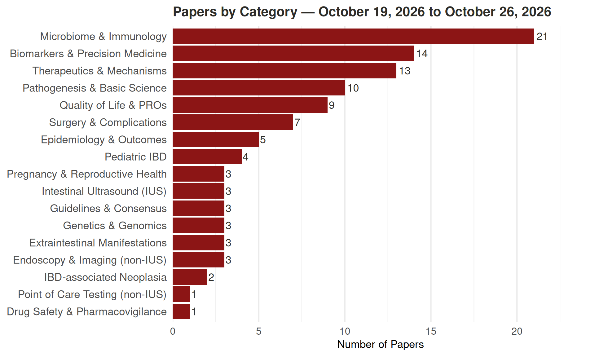

IBD Literature Report
Coverage: October 10, 2026 - October 17, 2026
108
Papers This Week
18
Categories
Papers by Category
Click a category to expand. Click a paper title to read its abstract.
Microbiome & Immunology (25 papers)
Fecal Microbiota Transfer for Recurrent Clostridioides difficile Infection: A Retrospective Single-Center Analysis. Zeitschrift fur Gastroenterologie | 2026-10-16
Clostridioides difficile infection (CDI) is the leading cause of healthcare-associated infectious diarrhea. Despite high initial response rates to antibiotic therapy, recurrence occurs in approximately 20% of patients. Fecal microbiota transplantation (FMT) has emerged as an effective treatment option for multiple recurrences, demonstrating high efficacy and a favorable safety profile. This study aimed to evaluate the effectiveness and safety of FMT in patients with recurrent CDI (rCDI). In this single-center retrospective study, 75 patients who underwent FMT for rCDI between November 2016 and January 2026 after experiencing at least two recurrences despite standard antibiotic therapy were included. Donor screening was performed according to the requirements of the German Federal Institute for Drugs and Medical Devices (BfArM). Following CDI-directed antibiotic pretreatment, FMT was administered either by colonoscopy, oral capsules, or a combination of both. Patients were followed for three months. The primary endpoint was the absence of diarrhea as a surrogate marker for rCDI, including a predefined subgroup analysis of patients with inflammatory bowel disease (IBD). Follow-up data were available for 65 patients, of whom 56 (86.1%) achieved sustained clinical remission. Patients with concomitant IBD (n=15) showed a comparable response rate (86.7%). The route of FMT administration had no significant impact on treatment outcome. Overall, FMT was well tolerated, with only four patients (5.3%) reporting predominantly self-limiting adverse events. FMT is a highly effective and safe treatment for recurrent CDI, including in multimorbid patients and those with concomitant IBD. Die Clostridioides-difficile-Infektion (CDI) ist die häufigste Ursache einer nosokomial erworbenen infektiösen Diarrhoe. Trotz guter Ansprechraten unter antibiotischer Therapie treten Rezidive bei ca. 20% der Patienten auf. Der fäkale Mikrobiotatransfer (FMT) ist insbesondere bei multiplen Rezidiven eine effektive Therapieoption mit hoher Wirksamkeit und gutem Sicherheitsprofil. Ziel dieser Studie war die Untersuchung von Effektivität und Sicherheit des FMT bei rezidivierender CDI (rCDI).In einer monozentrischen retrospektiven Analyse wurden 75 Patienten untersucht, die zwischen November 2016 und Januar 2026 nach mindestens zwei Rezidiven einer CDI mittels FMT behandelt wurden. Das Spenderscreening erfolgte gemäß BfArM-Vorgaben. Nach vorbereitender antibiotischer Therapie wurde der FMT kolonoskopisch, oral mittels Kapseln oder kombiniert appliziert. Die Nachbeobachtung betrug drei Monate. Primärer Endpunkt war das Ausbleiben einer Diarrhoe als Surrogatmarker für eine rCDI, einschließlich einer Subgruppenanalyse bei chronisch entzündlichen Darmerkrankungen (CED).Von 65 Patienten mit vollständiger Nachbeobachtung erreichten 56 (86,1 %) eine anhaltende Symptomfreiheit. Auch Patienten mit CED (n=15) zeigten vergleichbare Ansprechraten (86,7 %). Die Applikationsform beeinflusste den Therapieerfolg nicht. Der FMT war insgesamt sehr gut verträglich; lediglich vier Patienten (5.3 %) berichteten über überwiegend selbstlimitierende Nebenwirkungen.Der FMT ist eine hochwirksame und sichere Therapie der rCDI, auch bei multimorbiden Patienten und Patienten mit CED.
Stallmach A, Guse J, Katzer K, Reuken PA, Knafla F, Schauer A, Thon S, Kiehntopf M, Haziri D, Steube A
Editorial: How Can We Best Detect Frailty in Older Patients With Inflammatory Bowel Disease? Authors’Reply.Editorial★ Alimentary pharmacology & therapeutics | 2026-10-16
Abstract not available.
Carballo-Folgoso L, Duque Alcorta JM, Varela P, Suárez A, Riestra S
Spontaneous hypopigmentation mutant in threespine stickleback fish exhibits changes in the gut microbiome consistent with inflammatory bowel diseases. G3 (Bethesda, Md.) | 2026-10-15
Albinism is a large group of disorders characterized by a loss of pigment in ectoderm-derived tissues - most noticeably impacting the skin, hair, and eyes. Albinism is categorized as either syndromic or non-syndromic. Syndromic albinisms include a wide range of disorders with mutations impacting not just pigmentation but other cellular functions. These include, non-exclusively, melanogenesis disorders, endosome trafficking disorders like lysosomal storage disorders, and cell migration disorders. Mutations leading to syndromic albinisms can cause multi-organ system symptoms due to broad disruption lysosome related organelles (LROs) function. Various genetic mutations impact biogenesis, cell maturation, or trafficking at different stages which can lead to a range of severity. Syndromic albinisms also present with different combinations of symptoms depending on the impacted organelles; including oculocutaneous albinism (OCA) (melanosomes), blood diathesis (platelet dense granules), pulmonary fibrosis (lamellar bodies), or chronic inflammation (multiple cellular sources). Animal models for these multisymptomatic complex disorders are needed to understand the effects on systemic health. One such area of interest is in gut health of those with syndromic albinism. Shared inflammatory patterns of syndromic albinisms like Hermansky-Pudlak Syndromes (HPS) and Inflammatory Bowel Disease (IBD) are well studied, with animal models of HPS jointly used to study patterns of inflammation in IBD. However, the impact of this shared gastrointestinal inflammation on the gut microbiome remains unexplored. Using a spontaneously identified mutant family of threespine stickleback fish, we characterize phenotypes consistent with oculocutaneous albinism and vision impairment and demonstrate shared features of gut health to IBD extend from inflammation to the gut microbiome. We argue syndromic albinism models should be explored as models to study the gut microbiome in addition to inflammatory phenotypes in IBD, and importantly, be used to test microbial/dietary interventions for both IBD and syndromic albinisms.
Beck EA, Smith CA, Currey MC, Small CM, Bohannan BJM, Cresko WA
Functionally declining microbiota in chronic disease: beyond taxonomic loss.Review★ Gut microbes | 2026-10-15
Microbiota deterioration in modern human populations has been linked to chronic disease, and taxonomic profiling is increasingly used to understand, diagnose, and guide treatment. Yet such profiles do not fully capture disease-relevant microbiota states. I propose functional decline within retained taxa as a distinct axis of microbiota deterioration, complementary to taxonomic loss. Modern environmental pressures can drive not only taxonomic loss but also directional selection toward variants or lineages with reduced host-beneficial function or increased harmful activity. Two mechanistically characterized systems from studies by my group illustrate this process: antibiotic-selected Akkermansia variants with diminished metabolic benefits, and Faecalibacterium pathobionts that promote disease when dominant over beneficial strains, with supporting evidence from atopic dermatitis and pediatric inflammatory bowel disease. Evidence from additional gut taxa suggests that this pattern may extend beyond these two examples. By integrating this hidden axis of functional decline with the well-established axis of taxonomic loss, the proposed two-axis framework could help clarify inconsistent microbiota-disease associations and guide strain-resolved, function-first approaches to microbiota analysis and intervention.
Kim HS
Hematopoietic cell transplantation using treosulfan-based conditioning for IL-10 receptor deficiency. Journal of human immunity | 2026-10-15
IL-10 receptor deficiency is a life-threatening inborn error of immunity associated with early-onset inflammatory bowel disease. Hematopoietic cell transplantation (HCT) using treosulfan-based conditioning resulted in excellent survival with full donor engraftment. Importantly, anakinra effectively served as a bridge to HCT.
Lakkaraja M, Schmitt EG, Sood AK, Chen K, Modi AJ, Verbsky JW, Torgerson T, Wahbeh G, Petrovic A, Baker KS
Gut Microbiota-Dependent Tryptophan Metabolism Drives the Therapeutic Effects of Baitouweng Tang in Colitis via the AhR Pathway. Food science & nutrition | 2026-10-14
With dysregulation of the gut microbiota and its metabolic byproducts playing a pivotal role in inflammatory bowel disease (IBD) pathogenesis. Baitouweng Tang (BTWT), a traditional herbal formulation, has long been employed to treat gastrointestinal disorders and shows promising potential in the management of IBD. However, its precise pharmacological mechanisms remain elusive. In this study, we employed targeted metabolomics, high-throughput sequencing, and molecular biology techniques to elucidate the therapeutic mechanisms of BTWT in the treatment of ulcerative colitis (UC). BTWT significantly enhanced the relative abundance of Bifidobacterium, improved the indole metabolic pathway of tryptophan, and restored the levels of indole metabolites, such as indole-3-lactic acid (ILA). These changes activated the aryl hydrocarbon receptor (AhR) and led to marked improvements in the clinical symptoms of UC in mice. Conversely, the therapeutic effects of BTWT were substantially diminished in an antibiotic-induced gut microbiota depletion model. Notably, fecal microbiota transplantation (FMT) partially restored BTWT efficacy, underscoring the critical role of the gut microbiota in mediating its therapeutic effects. Furthermore, in an in vitro lipoteichoic acid (LTA)-induced HT-29 inflammation model, ILA treatment attenuated inflammation and concurrently increased the expression of AhR, CYP1A1, and CYP1B1. These findings suggest a potential link between BTWT-induced changes in tryptophan metabolites, AhR pathway activation, and the amelioration of colitis, though the causal relationship remains to be established. Our study provides a basis for further mechanistic investigation into the AhR pathway as a possible therapeutic target in UC.
Niu C, Hua Y, Kang J, Li F, Chen B, Guo R, Wei Y
Enteric ChAT-Expressing Neurons Mediate the Protective Effect of Lactobacillus plantarum in Inflammatory Bowel Disease.★ Advanced science (Weinheim, Baden-Wurttemberg, Germany) | 2026-10-14
The gut microbiota plays a crucial role in inflammatory bowel diseases (IBD), yet how specific microbial components influence disease progression remains incompletely understood. Our study reveals that decreased abundance of Lactobacillus species correlates with ulcerative colitis severity in patients. Among tested strains, L. plantarum A736, isolated from traditional fermented foods, demonstrated protective effects in ameliorating dextran sulfate sodium (DSS)-induced colitis in a mouse model. Strikingly, multi-omics analysis revealed that L. plantarum A736 uniquely enhances choline acetyltransferase-expressing (ChAT+) neurons in the enteric nervous system and elevates acetylcholine (ACh) levels. Further analysis identified that L. plantarum A736 metabolizes tryptophan to produce indole-3-lactic acid (ILA), and supplementation with ILA significantly mimics this strain’s anti-inflammatory effects by restoring ChAT+ neurons and cholinergic signaling. Crucially, selective ablation of colonic ChAT+ neurons abolished the protective effect of both L. plantarum A736 and ILA, establishing their essential role in mediating these effects. These findings demonstrate that microbial metabolites can modulate enteric neuronal circuits to regulate gut immunity. The identified ILA-ChAT+ neuron axis represents a novel neuro-immune pathway that could be targeted for IBD treatment.
Xia B, Sun Y, Wang J, Liu Y, Wang L, Jiang S, Bai G, Zhang R, Zhang Y, Kou R
Sargassum soluble dietary fiber alleviates oxidative stress and gut microbiota dysbiosis to prevent inflammatory bowel disease in C57BL/6 mice. Journal of the science of food and agriculture | 2026-10-14
Fermentation may enhance the bioactivity of Sargassum soluble dietary fiber (SDF). This study investigates the preventive effects of Bifidobacterium longum fermented Sargassum SDF (BL-SDF) against oxidative stress and inflammatory bowel disease (IBD). In vitro, the BL-SDF significantly reduced nitric oxide (NO) production by 16.98-23.04% and reactive oxygen species (ROS) accumulation by 65.30-81.28% in lipopolysaccharide (LPS)-stimulated RAW264.7 macrophages, increased superoxide dismutase (SOD) and catalase (CAT) activities, decreased malondialdehyde (MDA), and suppressed prostaglandin E2 (PGE2), interleukin-6 (IL-6), tumor necrosis factor alpha (TNF-α), and interleukin-1 beta (IL-1β). In dextran sulfate sodium (DSS)-induced C57BL/6 mice, pre-administration of BL-SDF alleviated weight loss and colonic damage, enhanced antioxidant enzymes activities (SOD, CAT, and glutathione peroxidase (GSH-Px)), and reduced MDA and NO levels in the colon. Additionally, 16S ribosomal RNA (rRNA) sequencing analysis further indicated enrichment of Incertae_Sedis group, Faecalibaculum, and Roseburia, and gas chromatography-mass spectrometry (GC-MS) revealed elevation of acetic acid, propionic acid, butyric acid, and valeric acid (P < 0.05). Concurrently, BL-SDF significantly reduced the expression of pro-inflammatory cytokines including TNF-α, IL-1β, IL-6, and interleukin-23 (IL-23). BL-SDF alleviates intestinal inflammation by enhancing antioxidant activities and modulating gut microbiota, suggesting that fermented Sargassum SDF may serve as a dietary strategy for preventing inflammatory bowel disease. © 2026 Society of Chemical Industry.
Cai H, Li E, Wang Z, Li R, Zhao Q, Song B, Liu X, Huang R, Xu B, Liu S
Mediterranean diet, gut microbiota, and intestinal barrier integrity: implications for digestive and systemic health.Review Antonie van Leeuwenhoek | 2026-10-13
The Mediterranean diet has gained increasing attention for its effects on gut microbiota, microbial metabolism, intestinal barrier function, and related clinical outcomes. This narrative review critically synthesizes evidence from 51 publications identified through structured searches of PubMed/MEDLINE and Google Scholar, including human intervention studies, observational studies, systematic and narrative reviews, and selected preclinical studies. The available evidence suggests that the MD can influence microbial composition and function, although taxonomic responses vary considerably between populations and study designs. More consistent findings involve microbial metabolic activity, particularly short-chain fatty acid production, bile acid remodeling, and polyphenol-derived metabolites. These changes may contribute to intestinal barrier regulation, mucosal homeostasis, and immune modulation. Human intervention studies provide supportive evidence in inflammatory bowel disease, functional gastrointestinal disorders, obesity, metabolic syndrome, and related conditions, while evidence for neurological, autoimmune, and cancer-related outcomes remains more limited and is often observational or mechanistic. Direct evidence for improved intestinal barrier function is still less extensive than indirect evidence based on inflammatory markers, microbial metabolites, and permeability-related measures. Differences in microbiome methodology, baseline diet, disease status, geographic background, and intervention duration contribute to variability across studies. The MD therefore represents a promising dietary framework for modulating gut microbial function and intestinal homeostasis, but further long-term and mechanistically integrated human studies are needed to define causal pathways and identify individuals most likely to benefit.
Perets TT
B cells regulate T cell transfer colitis by partially reconstituting luminal IgA and modulating the colonic microbiota.★ Inflammatory bowel diseases | 2026-10-12
Loss of immune tolerance to commensal microbial antigens is a central driver of inflammatory bowel disease. While regulatory T cells are well recognized in maintaining intestinal homeostasis, the contribution of B cells-particularly IgA-secreting cells-remains incompletely defined. In the T cell transfer colitis model, cotransfer of splenic B cells attenuates disease, an effect largely attributed to IL-10-producing regulatory B cells (Bregs). However, alternative B cell-dependent mechanisms have not been fully explored. Here, we investigated whether splenic B cells regulate T cell transfer colitis through IgA-dependent mechanisms independent of Breg-associated cytokines. We show that splenic B cells from wild-type C57BL/6 (B6) mice reconstitute bone marrow and peripheral B cell compartments in RAG1⁻/⁻ recipients, undergo class switching, migrate to the colonic lamina propria as sIgA⁺ B lineage cells, and partially restore luminal secretory IgA. B cell cotransfer significantly attenuated clinical and histological colitis without increased expression of canonical Breg-associated cytokines, including interleukin-10, transforming growth factor β, and interleukin-35 subunits. In contrast, splenic B cells from IgA-deficient mice failed to attenuate colitis despite comparable peripheral B cell reconstitution. Restoration of secretory IgA was associated with increased bacterial IgA coating, reduced fecal bacterial burden, and remodeling of the colonic microbiota, including enrichment of beneficial commensal taxa. Importantly, because IgA-deficient B cells failed to attenuate colitis despite comparable peripheral B cell reconstitution, these findings support an important role for IgA in mediating the protective effect of B cell transfer. Collectively, these findings identify IgA-mediated modulation of the microbiota as an alternate mechanism by which B cells attenuate T cell transfer colitis, highlighting a Breg-independent regulatory pathway with potential relevance to inflammatory bowel disease pathogenesis.
Urrete J, Kim M, Chilukuri A, Kaur P, Shen Z, Holton M, Jedlicka P, Urtecho G, Bamias G, Rivera-Nieves J
β-Glucan-based oral nano/micro delivery systems: harnessing dual immunomodulatory and microbiota-modulating properties for targeted therapy of cancer and inflammatory bowel disease.Review Nanoscale | 2026-10-12
The efficacy of oral drug delivery is often constrained by gastrointestinal physiological barriers and the hepatic first-pass effect, while conventional oral formulations lack the capability of targeted release at intestinal lesions, creating an urgent need for innovative functional delivery carriers. β-Glucan, an abundant natural polysaccharide, holds great potential for constructing intelligent oral nano/micro delivery systems, owing to its resistance to human digestive enzymes and its inherent dual immunomodulatory and microbiota-regulating properties. This carrier not only serves as an ideal protective vehicle but also bypasses the first-pass effect via M-cell-mediated lymphatic targeting and achieves site-specific drug release at pathological sites through its susceptibility to colonic microbiota enzymatic degradation. This review emphasizes the structural diversity, structure-activity relationships, and combined immunomodulatory/microbiota-modulating functions of β-glucan. It further explains how M-cell targeting and microbiota responsiveness are integrated to overcome gastrointestinal barriers for precise intestinal and systemic delivery. Recent advances in β-glucan-based nano/micro delivery systems for the treatment of cancer and inflammatory bowel disease are also highlighted. Finally, current challenges and future directions for β-glucan-based oral nano/micro delivery systems are outlined. In summary, the unique properties of β-glucan offer exciting new opportunities for targeted oral drug delivery.
Fu Y, Cao C, Jiao Y, Cao Y, Hao H, Cui X, Gao D, Gao Y, Zhang Q, Liu Y
Anemoside B4 from Pulsatilla chinensis Ameliorates Ulcerative Colitis by Inhibiting Inflammatory Responses via the Modulation of the Gut Microbiota-Immune Interplay. The American journal of Chinese medicine | 2026-10-08
We previously demonstrated that anemoside B4 (AB4) exerts a beneficial effect in a dextran sulfate sodium (DSS)-induced murine model of ulcerative colitis (UC). In this study, we further explored the mechanism of AB4 against UC from the perspective of gut microbiota-immune interplay. The gut microbiota was depleted in two DSS-induced colitis models to investigate the modulatory effects of the gut microbiome on immune responses and the activity of AB4. In parallel, adoptive transfer of CD4[Formula: see text]CD62L[Formula: see text] T cells into Rag1-deficient (Rag1-/-) mice was used to elucidate the alterations in the gut microbiota associated with immune-mediated colitis as well as the modulation by AB4. qPCR, ELISA and western blotting were used to determine the inflammatory responses of mice with colitis, while immunohistochemistry and flow cytometry were employed to determine the CD4[Formula: see text] T cell function and the underlying mechanism. Metagenomic sequencing analysis was used to detect changes in the intestinal microbiota. The depletion of the gut microbiota attenuated disease severity and immune responses in mice with DSS-induced acute and chronic colitis. Notably, the inhibitory effects of orally administered AB4 on colitis progression and immune responses were abrogated. In addition, colitis induced by adoptive transfer of CD4[Formula: see text]CD62L[Formula: see text] T cells into Rag1-/- mice was accompanied by CD4[Formula: see text] T cell engraftment and alterations in gut microbiota. Remarkably, all these pathological changes were significantly attenuated by AB4. Crucially, we found that AB4 suppresses the proliferation, migration, and differentiation of CD4[Formula: see text] T cells, which provides a mechanistic basis for its immunosuppressive effects. Collectively, these findings indicate that the gut microbiota and the immune system, particularly CD4[Formula: see text] T cells, interact with each other in the initiation of colitis. We show that, by targeting this gut microbiota-immune interplay, AB4 is a promising therapeutic strategy for UC.
Deng LR, Zhong YM, Zhu SF, Wu ZY, Chen FJ, Huang CY, Wu QY, Tomlinson B, Tan HE, Li YH
TLR Signaling Beyond Immunity: Emerging Roles in Cell Migration, Metabolism, Development, and Host-Microbiome Crosstalk.Review Biology | 2026-10-07
Recent findings support a broader view of TLR signaling as an integrative signaling hub that links immunity with cell migration, metabolism, development, and host-microbiome crosstalk. In cell migration, TLRs exert context-dependent effects through chemokine receptor regulation, adhesion and cytoskeletal modulation, and indirect cytokine-mediated signaling. In metabolism, TLRs orchestrate insulin resistance, obesity, and glucose homeostasis in a receptor- and tissue-specific manner. In tissue injury and development, TLR signaling exerts dual roles; it is detrimental in ischemia-reperfusion injury, but beneficial in vascular remodeling and neurogenesis. We then examine the bidirectional interplay between TLRs and the gut microbiome, where TLRs shape microbial community structure and intestinal immune homeostasis. Finally, we survey the therapeutic landscape of TLR modulators, highlighting that while TLR agonists are predominantly explored in oncology, TLR antagonists show promise in autoimmune diseases such as inflammatory bowel disease. Special attention is given to insights from organoid, rodent and zebrafish models, which have provided powerful in vitro and in vivo evidence for multiple roles of TLR signaling under both physiological and pathological conditions. A deeper understanding of these non-canonical functions will be essential for developing next-generation therapeutic strategies that selectively modulate TLR signaling in infectious, inflammatory, metabolic, and microbiome-associated diseases.
Liu L, Spaink HP
Flurbiprofen for Inflammatory Bowel Disease: A Review of Colon-Targeted Formulations. Recent advances in drug delivery and formulation | 2026-10-07
Crohn’s disease and ulcerative colitis are both classified as forms of Inflammatory Bowel Disease (IBD). Strategies that reduce overall systemic exposure while delivering antiinflammatory drug directly to the inflamed colon are necessary for treating IBD. Flurbiprofen is an effective Non-Steroidal Anti-Inflammatory Drug (NSAID) with potential utility in IBD because it inhibits cyclooxygenase-1 and cyclooxygenase-2, thereby reducing the synthesis of proinflammatory prostaglandins. However, its clinical use for IBD may be limited by gastrointestinal toxicity and the inadequate delivery of conventional oral formulations to the inflamed colonic mucosa. These limitations may result in insufficient drug concentrations at the target site while increasing systemic exposure and the risk of adverse effects. Consequently, colon-targeted flurbiprofen delivery systems are being explored to enhance local therapeutic efficacy and minimize gastrointestinal and systemic toxicity. The current status of colon-targeted drug delivery has improved recently. Flurbiprofen may be locally delivered using techniques such as pH-sensitive coatings, timed release systems, hydrogels, polysaccharide-based matrices, nanoparticles, and microbially triggered platforms. The improvement in both therapeutic efficacy and drug safety in the management of Inflammatory Bowel Disease (IBD) with flurbiprofen will depend on integrating preclinical and clinical evidence. Key considerations include current formulation approaches, colon-targeting strategies, pharmacokinetic and pharmacodynamic variables, interspecies differences in intestinal microbiota, stability concerns, and the challenges of translating preclinical findings to humans. Future research should focus on customized delivery systems and hybrid nanocarriers for targeted flurbiprofen delivery, thereby enhancing therapeutic efficacy while minimizing systemic adverse effects.
Chaurasia AK, Tiwari RK, Verma S, Sharma AK
DOI: 10.2174/0126673878478166260924052533 | View on PubMed →
Lactobacillus reuteri attenuates chronic diarrhea by modulating microbiota homeostasis and macrophage polarization through the cGAS/STING pathway dependent on D-lactate-mediated mitochondrial function. Microbiological research | 2026-10-04
Chronic diarrhea (CD) severely affects patients’ quality of life and is linked to ulcerative colitis, inflammatory bowel disease, and colorectal cancer. Gut microbiota dysbiosis plays a crucial role in intestinal health, with Lactobacillus reuteri emerging as a key regulator. However, its role in chronic diarrhea remains unclear. In this study, we observed macaques with spontaneous diarrhea and investigated microbial and metabolic changes. We also developed a chronic diarrhea mouse model using dextran sulfate sodium. CD group of both models revealed a significant reduction of L. reuteri. L. reuteri transplantation alleviates intestinal injury in CD by secreting D-lactate and modulates macrophage polarization. L. reuteri-derived D-lactate binds to IARS2 in intestinal epithelial macrophages, reducing mitochondrial IARS2 activation and suppressing cGAS-STING pathway activation. This preserves mitochondrial function while decreasing M1 macrophage polarization. Our research revealed the significance of microbiota dysbiosis in CD with both non-human primate and murine model, and highlighted the critical role of L. reuteri, which is conducted with D-lactate-mediated modulation of macrophage function and offered new insights into probiotic therapy for CD.
Cheng X, Zhang Y, Li C, Jiang M, Song J, Fang F, Chang K, Zhu X, Jian C, Chen J
Oudemansiella raphanipes polysaccharide alleviates DSS-induced colitis associated with gut microbiota and ZBP1-associated PANoptosis.★ Phytomedicine : international journal of phytotherapy and phytopharmacology | 2026-10-03
Ulcerative colitis (UC) is a chronic relapsing inflammatory bowel disease with limited preventive options. The edible mushroom Oudemansiella raphanipes produces polysaccharides with reported bioactivity, but the effects of its purified fraction Oudemansiella raphanipes polysaccharide (UAE-ORP) on colitis remain unknown. UAE-ORP was evaluated in mice with sodium dextran sulphate (DSS)-induced colitis using metagenomic and metabolomic analysis, as well as histological, ELISA and Western blot analysis of intestinal barrier function, ZBP1-associated PANoptosis-related proteins, and FFAR2/FFAR3 expression. UAE-ORP alleviated DSS-induced colonic injury, reducing the DAI scores to 1.7 ± 0.3-2.7 ± 0.5 across treatment groups and restoring colon length to 6.2 ± 0.9-8.2 ± 0.8 cm across doses. UAE-ORP was associated with attenuated ZBP1-associated PANoptosis-related protein expression, increased Lachnospiraceae abundance, and restored acetic acid and 3,4-dihydroxyphthalate levels. UAE-ORP also restored the protein expression levels of FFAR2 and FFAR3. Correlation analysis suggested a potential association between Lachnospiraceae-related metabolites and FFAR2/FFAR3 signaling. UAE-ORP alleviates DSS-induced colitis in mice. The protective effects coincide with altered gut microbiota composition, elevated microbial metabolites, restored FFAR2/FFAR3 expression, and concomitant changes in ZBP1-associated PANoptosis-related protein. These observations identify several candidate pathways warranting further investigation and provide preliminary mechanistic context for the anti-colitic activity of this mushroom polysaccharide.
Zhong C, Zhang J, Wang Y, Lu K, Sun Y, Li X, Ma H, Guan L
Targeting the Microbiota-Metabolism-Immunity Axis: Active Components of Traditional Chinese Medicine in Colitis-Associated Colorectal Cancer.Review International journal of molecular sciences | 2026-10-03
Colitis-associated colorectal cancer (CAC) develops in the setting of long-standing intestinal inflammation and remains a major complication of inflammatory bowel disease (IBD). Although effective control of inflammation may reduce cancer risk, approaches that specifically prevent the progression from chronic colitis to neoplasia remain limited. Disruption of the gut microbiota-metabolism-immunity axis is increasingly implicated in this process, as microbial dysbiosis and altered metabolite production can compromise epithelial barrier integrity, sustain inflammatory signaling, and disturb mucosal immune homeostasis. This review examines how active components derived from traditional Chinese medicine (TCM), particularly flavonoids, alkaloids, saponins, and polysaccharides, influence this interconnected network in CAC-related models. Rather than treating these constituents as a single group, we compare the mechanistic patterns and evidence base associated with each class. Flavonoids and alkaloids have been studied mainly in relation to inflammatory signaling and epithelial barrier protection, whereas saponins are more often linked to regulation of the immune microenvironment. Polysaccharides have been studied most frequently in relation to microbiota remodeling, short-chain fatty acid production, and mucosal immune balance. These distinctions are not absolute, and substantial overlap exists across component classes. Moreover, most evidence is derived from animal or cell-based studies, with marked variation in experimental models, compound characterizations, dosing, and outcome assessments. The microbiota-metabolism-immunity axis provides a coherent framework for interpreting the multi-level actions of TCM-derived components, but their causal mechanisms and clinical relevance to human CAC require further validation.
Chen Q, Zhang H, Fu L, Liu F, Yang Q, Zhang G, Huang Y, Yang Y, Yao C, Wang Y
Oral microbiome and inflammatory bowel disease: A scoping review. American journal of dentistry | 2026-10
To examine the association between the oral microbiome and IBD in terms of microbiota diversity, composition, function, and diagnostic potential through a scoping review of the existing literature. This scoping review was structured following the PRISMA-ScR guidelines. Literature searches were conducted in PubMed, Embase, and the Cochrane Library, with the time frame restricted from database inception to November 17, 2025. This review included 31 studies, among which seven topics for patients with periodontitis and IBD-related periodontitis, three studies assessed single bacterial species, and the remaining 21 articles explored the diversity and phylum-level taxonomic shifts of oral microbiota in IBD patients, functional and metabolic pathway alterations associated with oral dysbiosis, as well as the diagnostic potential and biomarkers derived from oral microbial profiles. The oral microbiota of IBD patients exhibits characteristic dysbiosis, manifested by the enrichment of pathogenic taxa, depletion of anti-inflammatory species, and metabolic dysfunction, which are closely associated with gut microbial alterations and systemic inflammatory status. The salivary microbiome demonstrates significant diagnostic potential for IBD.
Chen C, Zhang H, Cheng T, Zhou F, Chen X, Fang M, Qi P
Eicosapentaenoic Acid-Acylated Astaxanthin Ameliorates DSS-Induced Chronic-Like Relapsing Colitis Associated With Gut Microbiota and Bile Acid Metabolism. Molecular nutrition & food research | 2026-10
The role of eicosapentaenoic acid (EPA) in improving ulcerative colitis (UC) has been extensively studied. EPA-acylated astaxanthin (EA), a novel fish oil, has unclear effects on UC. This study constructed a DSS-induced chronic-like relapsing colitis model in mice induced by 2% dextran sulfate sodium (DSS) and primarily concentrated on the changes in gut microbiota and intestinal bile acids (BA) to investigate the anti-UC mechanisms of EA. The results indicated that EA effectively upregulated the expressions of tight junction proteins, ZO-1 and Occludin, while restraining the triggering of the NLRP3 inflammasome. Additionally, EA treatment increased the diversity of the gut microbiota and increased the proportion of Firmicutes, Actinobacteria, and Bifidobacterium, while decreasing the proportion of Bacteroidota, Proteobacteria, and Enterobacteriaceae, which are related to BA metabolism. The metabolomic analysis of BA indicated that EA elevated the concentrations of secondary BA, such as LCA, UDCA, and TUDCA, while decreasing primary BA, such as CA, CDCA, and β-MCA, thereby activating the intestinal ASBT/FXR/TGR5 pathway. In conclusion, EA alleviated DSS-induced colitis, and this protective effect was associated with the modulation of gut microbiota and BA metabolism. The present results laid the foundation for EA as a prospective functional component for UC.
He S, Li X, Zhou M, Jing B, Xia C, Duan J, Li H, Che H
Gut microbiota in genetic diseases: from Mendelian disorders to complex traits.Review Frontiers in immunology | 2026-09-30
As a core component of the human microecosystem, the dynamic balance of the composition and function of gut microbiota is essential to host health. In recent years, numerous studies have demonstrated that gut dysbiosis is not only associated with metabolic diseases and immune disorders but also plays a pivotal role in the pathogenesis of hereditary diseases. Ranging from chromosomal diseases (e.g., Down syndrome), monogenic diseases (e.g., cystic fibrosis, phenylketonuria, familial adenomatous polyposis, hereditary hemolytic anemia), mitochondrial diseases (e.g., Leber’s hereditary optic neuropathy, mitochondrial encephalomyopathy) to polygenic hereditary diseases (e.g., inflammatory bowel disease, autism spectrum disorder, obesity and diabetes), gut microbiota can markedly alter the manifestation and severity of disease phenotypes by regulating host immune responses, metabolic pathways and gene expression. Nevertheless, the bidirectional interaction network between host genes and gut microbiota has not been fully elucidated. Most existing studies merely focus on correlation analysis, and in-depth exploration of causal mechanisms remains insufficient. This review elaborates on the mechanisms of gut microbiota in monogenic diseases and hereditary diseases with complex phenotypes. By integrating the latest advances in genomics, metabolomics and microbiomics, it discusses how gut dysbiosis affects disease progression via immune modulation, metabolite reprogramming and epigenetic modification. Meanwhile, this paper summarizes the current status and challenges of clinical translation of microbiota-targeted therapies, such as probiotics and fecal microbiota transplantation(FMT), in the treatment of hereditary diseases. This review aims to provide a microecological perspective for understanding the pathogenesis of hereditary diseases and offer theoretical support for personalized and precise intervention.
Chen G, Li J, Huang T, Zeng D, Mo L, Li J, Zhu C
Fresh ginseng-derived vesicle-like nanoparticles protect against intestinal barrier injury in inflammatory bowel disease via the miR-29a-5p/TLR4 axis. Frontiers in immunology | 2026-09-30
Inflammatory bowel disease (IBD) remains therapeutically challenging, and disruption of the intestinal epithelial barrier constitutes a key pathogenic event. Ginseng-derived vesicle-like nanoparticles (GDNPs) protect against intestinal barrier injury in IBD; however, the effects of ginseng processing on nanoparticle characteristics and biological activity remain insufficiently understood. The protective effect of fresh and dried ginseng extract were compared in IBD model. GDNPs were isolated from fresh and dried ginseng by differential centrifugation and sucrose density-gradient ultracentrifugation, and characterized for morphology, particle size, and relative purity. Their effects on intestinal epithelial cell viability and permeability were compared. In vitro, inflamed NCM460 and RAW264.7 cells were treated with fresh GDNPs; tight junction protein expression and TLR4/STAT3 signaling were assessed by western blotting, and cytokine and miRNA (miR-29a-5p, miR-125b-5p, miR-21-5p) levels were measured by RT-qPCR. Trans-epithelial electrical resistance (TEER) was measured in epithelial cells overexpressing miR-29a-5p, and tight junction protein and TLR4 expression were examined after miR-29a-5p knockdown; direct targeting of TLR4 by miR-29a-5p was confirmed by dual-luciferase reporter assay. Intestinal epithelial cells were also exposed to conditioned medium from fresh GDNP-treated macrophages to assess tight junction protein and miR-29a-5p expression. In vivo, a dextran sulfate sodium (DSS)-induced murine colitis model was used to evaluate the preventive protective effects of low- or high-dose fresh GDNPs, and body weight, disease activity index (DAI), colon length, histopathology, macrophage polarization, tight junction protein expression, and inflammatory cytokine and miR-29a-5p levels were evaluated. Both fresh and dried ginseng extracts alleviated DSS-induced intestinal injury, with fresh ginseng extract showing stronger protective effects in several pathological and inflammatory parameters. Fresh and dried GDNPs showed comparable spherical morphology and particle-to-protein ratios, but fresh GDNPs were more susceptible to Triton X-100-induced lysis, indicating a higher proportion of intact vesicles. Fresh GDNPs promoted intestinal epithelial cell viability, whereas dried GDNPs at the same concentration had no significant effect, and fresh GDNPs conferred stronger protection against epithelial permeability disruption. In inflamed epithelial and macrophage models, fresh GDNPs suppressed TLR4/STAT3 signaling and pro-inflammatory cytokines (IL-6, IL-1β, TNF-α) while restoring tight junction proteins (Occludin, Claudin-1) and miR-29a-5p expression. Mechanistically, fresh GDNPs preserved epithelial barrier integrity by upregulating miR-29a-5p, which directly targeted and suppressed TLR4, and by reprogramming the macrophage inflammatory secretome. In DSS-induced colitis, fresh GDNPs attenuated body weight loss, DAI scores, and colon shortening; reduced M1 macrophage polarization; preserved tight junction protein expression; and restored miR-29a-5p expression in colon tissue. Fresh and dried ginseng-derived GDNPs exhibited differential epithelial protective effects in vitro. Fresh ginseng-derived GDNPs protected intestinal barrier integrity through the miR-29a-5p/TLR4 axis and macrophage-epithelial crosstalk.
Tang X, Ren Y, He M, Lv Y, Ding N, Liu F, He Y, Li Y
Viral-Gut Microbiota Interactions: Implications for the Gut Mucosa in Inflammatory Bowel Disease.Review International journal of molecular sciences | 2026-09-29
Inflammatory bowel disease (IBD), including ulcerative colitis (UC) and Crohn’s disease (CD), arises from complex interactions among genetic susceptibility, immune dysregulation, environmental factors, and the gut microbiome. Bacterial dysbiosis has been extensively studied, whereas the gut virome-comprising eukaryotic viruses and bacteriophages-remains less understood. Viruses can affect the intestinal barrier directly by infecting epithelial and immune cells, or indirectly by reshaping bacterial communities and host immunity. However, current evidence is dominated by cross-sectional associations and animal models, and whether virome alterations drive or result from intestinal inflammation remains unresolved. In this review, we provide a focused overview of intestinal barrier components relevant to IBD, synthesize human and animal evidence on IBD-associated viruses, and distinguish direct viral effects, microbiota-mediated effects, and bidirectional virus-microbiota interactions. We highlight bacteriophage-bacteria interactions as a central and potentially causal axis, discuss UC- and CD-specific differences, and outline causality gaps, search methodology, and emerging therapeutic strategies. Finally, we propose key unresolved questions and future research directions.
Wu Y, Hou L, Li Y, Li J, Hua X, He Y, Ding S, Fang J
T-cadherin as a potential novel regulator of intestinal inflammation and fibrosis.Review Frontiers in physiology | 2026-09-29
T-cadherin (T-cad) is a non-canonical member of the cadherin superfamily with a distinguished structure of its glycosylphosphatidylinositol (GPI) anchor instead of transmembrane and cytoplasmic domains. This lends unique properties to and equips T-cad with dynamic mobility within the plasma membrane and extensive lateral interactions with signaling partners. Beyond its role as an adhesion molecule forming homophilic interactions, T-cad functions as a receptor for adiponectin and low-density lipoprotein (LDL), therefore playing an important role in regulating cellular processes such as proliferation, differentiation, and migration. These properties underscore its critical involvement in physiological and pathological processes, including central nervous system development, cancer progression, and cardiovascular disease. However, the role of T-cad in intestinal inflammation, injury, and fibrosis remains underexplored. This review highlights the structural and functional characteristics of T-cad, its binding partners, its expression and functions in various types of cells, tissues and organs, and its roles in health and disease. This review also speculates on its potential involvement in intestinal inflammation, particularly in stricturing Crohn’s disease.
Wang Y, Prasad A, Liu W, Chandra J, Zafar A, Naydenov NG, Mukherjee PK, Ivanov AI, Rieder F
Heat-Inactivated Lacticaseibacillus paracasei PC-01 Alleviates DSS-Induced Colitis in Mice by Modulating Gut Microbiota and Intestinal Barrier Function. Nutrients | 2026-09-28
Background: Inflammatory bowel disease (IBD) is a chronic, progressive, immune-mediated inflammatory disorder of the gastrointestinal tract. Methods: This study used C57BL/6J mice induced by DSS to construct an intestinal inflammation model, and explored the alleviating effect and potential mechanism of heat inactivated Lactobacillus paracasei PC-01 (PC-01) on intestinal inflammation. Results: The results showed that heat-inactivated PC-01 significantly decreased the Disease Activity Index and H&E histopathological scores (p < 0.05). It also reduced the serum levels of pro-inflammatory cytokines, including IL-6, IL-1β, TNF-α, and malondialdehyde (p < 0.01), increased the levels of the anti-inflammatory factor IL-10 (p < 0.001) and antioxidant enzymes SOD and GSH-Px (p < 0.01), and restored the integrity of the intestinal epithelial barrier in DSS-induced colitis mice. Metagenomic analysis showed that PC-01 treatment restored the abundance of beneficial bacteria, including Barnesiella and Muribaculum, and reduced the enrichment of opportunistic pathogens such as Angelakisella and Lawsonibacter (p < 0.05). Further functional annotation of the microbial community indicated that PC-01 significantly enriched pathways related to the TCA cycle, riboflavin metabolism, Toll and Imd signaling, and lipopolysaccharide biosynthesis. In addition, the relative abundances of auxiliary activities, polysaccharide lyases, and S-layer homology modules were lower than those in the DSS group, whereas those of glycoside hydrolases, glycosyltransferases, and carbohydrate esterases were higher. At the transcriptional level, intervention with heat-inactivated PC-01 resulted in a downward trend in the expression of TLR4, Nfkb1, and Rela, accompanied by reduced expression of the chemokines MCP-1 and Cxcl10, and inflammasome-related genes NLRP3, Casp1, and IL-1β. Conclusions: In summary, heat-inactivated Lacticaseibacillus paracasei PC-01 effectively alleviated intestinal inflammatory injury in mice by regulating gut microbiota homeostasis and suppressing intestinal inflammatory responses.
Zhao X, Yang C, Gao L, Gao Y, Qian W, Liu H, Sun Z, Wang G, Zhao F
Research progress on intestinal probiotics-mediated protection of the intestinal mucosal barrier in ulcerative colitis.Review Frontiers in immunology | 2026-09-28
Ulcerative colitis (UC) is a major subtype of inflammatory bowel disease characterized by a chronic, relapsing course. Its pathogenesis involves complex interactions among gut microbial dysbiosis, epithelial barrier disruption, dysregulated immune responses, and oxidative stress. Impairment of the intestinal mucosal barrier facilitates the translocation of luminal antigens, bacteria, and microbial metabolites into the mucosa, thereby aggravating local inflammation. Probiotics may help maintain barrier homeostasis by reshaping the gut microbial community, reinforcing epithelial and mucus barriers, modulating mucosal immunity, and reducing oxidative injury. This review summarizes recent evidence on the protective effects of probiotics, including Lactobacillus spp., Bifidobacterium spp., and Akkermansia muciniphila, on the intestinal mucosal barrier in UC. Current findings suggest that probiotics can inhibit pathogen adhesion and colonization, enhance the production of beneficial metabolites such as short-chain fatty acids and tryptophan-derived compounds, and promote the expression of tight-junction proteins, including ZO-1, occludin, claudin-1, and claudin-4, as well as mucins such as MUC1 and MUC2. These effects may be mediated through the regulation of NF-κB, NLRP3, aryl hydrocarbon receptor (AhR), mitogen-activated protein kinase (MAPK), and related signaling pathways, thereby attenuating inflammation and oxidative stress and promoting epithelial repair. Combination strategies involving probiotics and prebiotics, traditional Chinese medicine-derived components, postbiotics, fecal microbiota transplantation, or novel delivery systems may improve microbial engraftment, enhance colon-targeted delivery, and strengthen microbiota remodeling and barrier repair. Nevertheless, the available evidence remains limited by substantial strain specificity, insufficient clinical validation, and the absence of standardized intervention protocols. Further multi-omics studies and well-designed clinical trials are warranted to clarify the efficacy, mechanisms, optimal dosing, and safety of these interventions in UC.
Ma G, Deng S
Therapeutics & Mechanisms (12 papers)
Multimodal prediction of infliximab initiation within 6 months after initiation of conventional therapy in pediatric Crohn’s disease: A multicenter algorithm development and validation study. Journal of pediatric gastroenterology and nutrition | 2026-10-15
Early prediction of treatment course in pediatric Crohn’s disease (CD) remains limited despite the importance of timely biologic therapy. We developed and externally validated a multimodal model integrating colonoscopy images and clinical data to predict infliximab initiation within 6 months after conventional therapy. We collected data from children newly diagnosed with CD at three hospitals: Seoul National University Bundang Hospital for internal validation, Kyung Hee University Medical Center, and Soonchunhyang University Bucheon Hospital for external validation. Each patient contributed 7 endoscopic images and 20 clinical variables. An attention-based multiple-instance learning framework aggregated endoscopic images into a patient-level representation and integrated them with clinical features. The imaging encoder used a ResNet-50 backbone pretrained with momentum contrastive learning on GastroNet-5M, and clinical features were encoded using a multilayer perceptron. Performance was assessed using the area under the receiver operating characteristic curve (AUROC), balanced accuracy, precision, recall, and F1 score. Explainable AI was evaluated using attention maps (image data) and SHAP values (tabular data). Seventy-seven children were included for model development and internal validation, with external validation performed in two independent cohorts (n = 10 and n = 20). The multimodal model achieved an AUROC of 0.839 and balanced accuracy of 0.732 in the discovery cohort. External-validation AUROCs were 0.857 and 0.688. SHapley Additive exPlanation analysis identified immunoglobulin G, body mass index, prealbumin, hematocrit, and age as key predictors. Attention maps highlighted inflamed mucosa and ulcerative lesions. A multimodal model integrating colonoscopy images with clinical data showed promising performance for predicting infliximab initiation within 6 months after conventional therapy in pediatric CD. Multimodal information may support early risk stratification and identify patients who could benefit from earlier biologic intervention.
Kim SY, Hwang SH, Yeo D, Kim J, Hwangbo G, Kim DH, Lee YM, Woo S, Hahn JW, Yon DK
Long-term Benefits of Mirikizumab on Patient-Reported Outcomes in Individuals with Crohn’s Disease: 2-Year Results from the VIVID-2 Extension Study. Clinical and translational gastroenterology | 2026-10-14
Mirikizumab, an anti-IL-23p19 monoclonal antibody, has demonstrated clinical efficacy in Crohn’s disease (CD), improving symptoms and quality of life (QoL) over one year in the VIVID-1 trial. This analysis from the VIVID-2 open-label extension evaluated its long-term impact on CD symptoms and QoL at two years. Patients from VIVID-1 with an endoscopic response continued mirikizumab (300 mg subcutaneous) in VIVID-2. Endoscopic non-responders at 52 weeks underwent re-induction, then maintenance therapy. QoL was assessed at Weeks 64 and/or 104 using the Inflammatory Bowel Disease Questionnaire (IBDQ), EQ-5D-5L visual analog scale (VAS), and work productivity by Work Productivity and Activity Impairment: Crohn’s Disease (WPAI:CD) questionnaire. Other patient-reported outcomes (PRO) assessed were fatigue (FACIT-Fatigue), abdominal pain (AP), stool frequency (SF), and clinical remission by PRO (AP ≤1 and SF ≤3, no worsening from baseline). Missing data were handled with modified non-responder imputation for categorical outcomes, and baseline observation carried forward for continuous outcomes. Analysis of covariance was used to estimate mean changes from baseline. At 104 weeks, 85.0% of VIVID-1 endoscopic responders and 72.6% endoscopic non-responders achieved IBDQ response, while 71.3% endoscopic responders and 60.8% endoscopic non-responders achieved IBDQ remission. By Week 64, EQ-5D-5L VAS scores improved by 22-27 points, WPAI decreased by 14-34 points, and >60% patients achieved meaningful improvement in fatigue. Approximately 75% responders and 54% non-responders achieved clinical remission by PRO at two years. Long-term mirikizumab treatment led to sustained QoL improvements and reduced symptoms in patients with CD, regardless of their endoscopic response status.
Chen M, Hart A, Vadhariya A, Brogan Y, Maria Chan WM, Moses RE, Lu N, Ananthakrishnan A, Glover SC, Long M
The right dose for the right patient: Toward precision infliximab therapy in acute severe ulcerative colitis.Editorial★ Inflammatory bowel diseases | 2026-10-14
The cost of delay: foregone public expenditure savings from delayed adalimumab biosimilar listing in Australia’s Pharmaceutical Benefits Scheme. Expert opinion on biological therapy | 2026-10-14
Adalimumab is among the highest-expenditure biologics under Australia’s Pharmaceutical Benefits Scheme (PBS). Although the Pharmaceutical Benefits Advisory Committee recommended listing adalimumab biosimilars in 2018, reimbursement did not begin until April 2021. The public savings forgone through this delay have not been quantified. This study aimed to estimate the PBS savings achievable had biosimilars been listed earlier. We conducted a retrospective policy evaluation using nationwide PBS dispensing data across all nine subsidized indications from January 2016 to December 2025. Observed monthly expenditure was compared with a counterfactual assuming earlier biosimilar listing in April 2019, with prices modeled on anniversary reductions, the first-new-brand statutory reduction, and subsequent price-disclosure cycles. A conservative price-reduction scenario was tested in the sensitivity analysis. Earlier adalimumab biosimilar listing was estimated to generate cumulative savings of AU$334.6 million (~US$223.9 million; 12.7% reduction). Savings remained substantial (AU$184.0 million; ~US$123.1 million; 7.0% reduction) under the conservative scenario. The greatest savings occurred in the highest-volume indications, with rheumatoid arthritis (30.6%) and Crohn’s disease (25.2%) together exceeding half the total. Delayed listing produced substantial forgone savings. Timely translation of regulatory approval into reimbursement, alongside reimbursement design, jointly determine the public value of biosimilar competition.
Yiu CH, Day RO, Raubenheimer J, Lu CY
Real-World Epidemiology of Inflammatory Bowel Disease in Italy: Treatment Patterns, Adherence, and Costs in Patients with Ulcerative Colitis Treated with Mesalazine. Drugs - real world outcomes | 2026-10-12
Ulcerative colitis (UC) and Crohn’s disease (CD) are chronic immune-mediated conditions associated with a substantial clinical and economic burden. Italian epidemiological evidence is limited. Mesalazine remains a cornerstone of UC management. This study aimed to provide updated epidemiological estimates of inflammatory bowel disease (IBD) in Italy, and to evaluate real-world treatment patterns, adherence to oral mesalazine, and healthcare costs among patients with UC initiating mesalazine therapy. A retrospective observational analysis was conducted using Italian administrative databases covering ~4 million beneficiaries. Patients with UC and CD were identified (January 2010-May 2023) using the International Classification of Diseases, Ninth Revision, Clinical Modification (ICD-9-CM) or exemption codes. Patients with UC who were new users of mesalazine were characterized at baseline. Mesalazine treatment patterns, adherence, and direct healthcare costs were described at follow-up. At the end of 2023, UC and CD prevalence rates were 272 (95% confidence interval [CI] 267-278) and 166/100,000 (95% CI 162-170) inhabitants, respectively. Incidence rates in 2023 of UC and CD were 18.9 (95% CI 18-20) and 10.8/100,000 (95% CI 10-12), respectively. Among 2552 patients with UC who were new mesalazine users, 69.6% of time-dependent mesalazine users were adherent (versus 56.1% pH-dependent users). Mean annual cost per patients with UC who were new mesalazine users in 2023 was €4516, mainly driven by hospitalizations. This real-world analysis provides recent epidemiological estimates of UC and CD, and describes a substantial economic burden, highlighting the need for improving adherence and therapeutic pathways.
Degli Esposti L, Veronesi C, Calabria S, Giannessi L, Barbieri A, Bartolini F, Dell’Orco S, Ferrante F, Grego S, Procacci C
Clinical Course and Predictors of Biologic Therapy, Hospitalisation and Surgery: A Five-Year Prospective Study in Newly Diagnosed Inflammatory Bowel Disease.★ Alimentary pharmacology & therapeutics | 2026-10-11
This study aimed to describe the characteristics of newly diagnosed inflammatory bowel disease (IBD) patients and to analyse their clinical course within the first 5 years after diagnosis, including the need for surgery, hospitalisations and treatments. This prospective and large multicentre incident cohort registry in Spain enrolled adults diagnosed with Crohn’s disease (CD), ulcerative colitis (UC) or unclassified IBD (IBD-U) in 2017 and followed them for 5 years. A total of 3301 patients were enrolled: 1526 with CD, 1633 with UC and 142 with IBD-U. Their median age at diagnosis was 43 years (interquartile range 31-56) and approximately 50% were male. Within 5 years post-diagnosis, 30% received biologics or JAK inhibitors (JAKi), 34% were hospitalised at least once and 9% underwent surgery. The cumulative incidence of biologic/JAKi treatment, hospitalisations and surgeries was higher among CD patients. Use of biologics/JAKi correlated with a more aggressive CD phenotype, greater UC extent and younger age at diagnosis. Biologics/JAKi treatment was associated with lower hospitalisation risk in both CD (Hazard ratio [HR] = 0.4, 95% confidence interval [CI] = 0.2-0.6) and UC patients (HR = 0.5, 95% CI = 0.2-0.9). However, it was not associated with the risk of abdominal surgery in CD but was linked to an increased risk of surgery in UC (HR = 11.9, 95% CI = 4.6-30.4). This large multicentre cohort demonstrated a higher use of biologics/JAKi during the first 5 years after IBD diagnosis than previously reported. Treatment with biologics/JAKi was associated with reduced risk of hospitalisation. However, under current clinical practice patterns, this therapeutic approach did not translate into lower risk of abdominal surgery.
Garre A, Nuñez Ortiz A, Rubio S, Diz-Lois Palomares MT, Riestra S, Alonso-Galán H, Fernández-Salgado E, Ferreiro-Iglesias R, Vela M, Ponferrada Díaz Á
Infliximab Serum Level Assessment After Switching from Intravenous to Subcutaneous Administration: The ISLASIS Study. Clinical and experimental gastroenterology | 2026-10-06
Subcutaneous infliximab (SC-IFX) has emerged as an alternative maintenance therapy for inflammatory bowel disease (IBD), offering absorption and sustained systemic exposure. Although higher and more stable serum concentrations have been reported with SC-IFX, prospective real-world data evaluating pharmacokinetic evolution after transition from intravenous infliximab (IV-IFX) remain limited, particularly in Latin America. We assessed infliximab trough concentrations following transition from IV-IFX to SC-IFX and explored associations with biomarkers and clinical outcomes. ISLASIS was a prospective, open-label study including adults with Crohn’s disease (CD) or ulcerative colitis (UC) receiving IV-IFX. All transitioned to SC-IFX and were evaluated at baseline (V1), week 12 (V2), and week 24 (V3). Infliximab trough concentrations were measured at each visit. Fecal calprotectin and clinical indices were assessed at baseline and week 24. Subgroup analyses explored pharmacokinetic behavior according to disease phenotype, prior biologic exposure, and IV regimen. Nineteen patients were included; 89.5% had CD, with 35.3% presenting perianal disease. Median trough concentrations increased from 8.7 μg/mL at baseline to 20.0 μg/mL at week 12 and remained at 20.0 μg/mL at week 24 (p=0.00029). Fecal calprotectin decreased from 239 to 142 μg/g (p=0.00097). Median Harvey-Bradshaw Index decreased from 8 to 3, while partial Mayo score declined from 2 to 0. Increases in serum infliximab concentrations were observed across the clinical and treatment subgroups evaluated, although interpretation of concentrations above 20 µg/mL was limited by the assay measurement range. No anti-infliximab antibodies were detected. One mild, self-limited injection-site reaction occurred. Transition from IV-IFX to SC-IFX was associated with rapid and sustained increases in trough concentrations, reductions in fecal calprotectin, and favorable changes in clinical activity scores. These findings should be interpreted in light of the small sample size and the upper measurement limit of the infliximab assay. This investigator-initiated prospective observational study was not registered in a clinical trial registry because treatment allocation was not determined by the study protocol. All participants received standard-of-care treatment, and the decision to switch from intravenous to subcutaneous infliximab was made as part of routine clinical practice.
Schiavetti BLP, Gasparini RG
Tofacitinib 20 vs 30 mg in acute severe ulcerative colitis: a double-blind randomized controlled trial.RCT★ Journal of Crohn’s & colitis | 2026-10
Tofacitinib has emerged as a promising therapy for acute severe ulcerative colitis (ASUC) due to its rapid onset of action. We compared the efficacy and safety of tofacitinib 20 mg/day vs 30 mg/day, both administered with intravenous corticosteroids (IVCS), in patients with ASUC. This was a double-blind, pilot, randomized controlled trial. Adult patients with ASUC were randomized to receive either tofacitinib 20 mg/day (Group 1) or 30 mg/day (Group 2) along with IVCS (hydrocortisone, 100 mg IV every 6 hours). The primary endpoint was clinical response by day 7. The secondary outcome was the cumulative probability of medical rescue therapy or post discharge escalation of therapy or colectomy within 90 days. Seventy-two patients were randomized, with 36 allocated to each treatment group. At day 7, clinical response was achieved in 33/36 (91.7%) patients in Group 1 and 31/36 (86.1%) in Group 2(RR 1.06, 95% CI 0.90-1.25; P = .46). The absolute difference in response rates was 5.6% (95% CI -9.98% to 21.34%). Rescue therapy was required in 3 patients in Group 1 (all received infliximab) and 5 patients in Group 2 (2 underwent colectomy and 3 received infliximab). Event-free survival at 90 days, defined as the absence of rescue therapy, treatment escalation, or colectomy, was similar between groups (83.3% vs 80.2%; log-rank P = .74). Adverse events were predominantly mild, with no reported venous thromboembolism or major adverse cardiovascular events. In this exploratory pilot trial, no statistically significant differences were observed with tofacitinib 30 mg/day compared with 20 mg/day when administered with IVCS. Clinical Trials Registry-India: CTRI/2024/10/075098.
Singh A, Garg A, Bhardwaj A, Singh D, Thakur A, Kaur L, Singla A, Kapoor L, Mahajan R, Mehta V
Loss of Acid Ceramidase in Myeloid Cells Protects From Chronic Colitis in IL10-Deficient Mice. FASEB journal : official publication of the Federation of American Societies for Experimental Biology | 2026-10
Patients with inflammatory bowel disease exhibit elevated expression of acid ceramidase (AC), an enzyme in sphingolipid metabolism. Recent studies have shown that myeloid cells contribute to the elevated expression of AC, such that the conditional loss in these cell types protects from acute colitis. We crossed conditional ASAH1 LyzMCRE knockout mice with IL10 knockout mice to determine the role of AC in a model of spontaneous, chronic colitis. Colon tissues were analyzed for lipids, mRNA, and protein. We performed flow cytometry to determine the role of myeloid AC in recruiting immune cells in disease. In this study, the conditional loss of AC in myeloid cells protected from chronic colitis, reduced markers of inflammation, increased ceramides in the colon, and reduced the inflammatory metabolite sphingosine-1-phosphate (S1P). Recruitment of immune cells into intestinal tissue was significantly impaired, specifically recruitment of neutrophils and effector Th1/Th17 T cells. The findings from this study indicate that AC may be a promising therapeutic target for patients with inflammatory bowel disease by modulating sphingolipid metabolism in immune cells.
Espinoza KS, Dahl BK, Ryan EM, Gordon MR, Doll CL, Marron MT, Beard CA, Dey PD, Besselsen DG, Simpson RJ
Etrasimod reduces circulating and mucosal inflammatory lymphocyte populations and alters innate immune and non-immune cell signatures in intestinal mucosa: ELEVATE UC phase 3 clinical data.RCT★ Journal of Crohn’s & colitis | 2026-10
Innate and adaptive immune cell dysregulation contributes to ulcerative colitis pathogenesis. The sphingosine 1-phosphate receptor modulator etrasimod showed efficacy in ulcerative colitis treatment in Phase 3 ELEVATE UC studies. Changes in circulating immune cells and mucosal cell types were characterized in etrasimod-treated patients with ulcerative colitis. Blood (etrasimod n = 525, placebo n = 257 patients) and mucosal biopsies (etrasimod n = 411, placebo n = 200 patients) from patients in the ELEVATE UC trials were used to assess cellular and molecular changes for etrasimod versus placebo in clinical remitters and non-remitters using immunophenotyping, transcriptomic and proteomic techniques. Selective and partial reduction in circulating T- and B-cell subsets was observed for etrasimod versus placebo (Week 12), with greater effects on CD4+ T cells, including Treg and Th17 cells, than CD8+ T cells, and on naive T cells and T central memory cells than T effector memory cells, without difference between remitters and non-remitters. No significant effects on monocytes nor NK cell numbers were observed. Mucosal biopsies showed corresponding reductions in T- and B-cell subsets, myeloid cells and neutrophils accompanied by downregulation of interleukin-17 and interleukin-8 signaling in both tissue and blood, most prominently in remitters, where non-immune cell changes were consistent with tissue repair. Etrasimod treatment of patients with ulcerative colitis drives T- and B-lymphocyte subset reductions in blood and intestinal mucosa, neutrophil reductions in tissue and mucosal downregulation of inflammatory pathways associated with ulcerative colitis pathogenesis. ClinicalTrials.gov (NCT03945188; NCT03996369).
Siegmund B, Crosby CM, Ryan RD, Smith J, Abreu MT, Vermeire S, Dotan I, Rabinowitz KM, Komori HK, Goetsch M
The predictive value of machine learning for the response to anti-TNF-α therapy in patients with Crohn’s disease: a systematic review and meta-analysis.Meta-analysis Frontiers in immunology | 2026-09-30
This meta-analysis aimed to evaluate the performance of machine learning (ML) in predicting the response to anti-tumor necrosis factor-α (anti-TNF-α) therapy in individuals with Crohn’s disease (CD), providing an evidence-based basis for the construction or update of prediction tools. PubMed, Cochrane Library, Embase, and Web of Science were comprehensively searched for studies published up to November 18, 2025 on ML predictive models for the therapeutic response to anti-TNF treatment in individuals with CD. The Prediction model Risk Of Bias Assessment Tool (PROBAST) was used to assess the risk of bias in the eligible articles. Model performance was assessed using the concordance index (C-index), and a meta-analysis was conducted. A total of 29 studies involving 6,697 patients with CD were included. Of these studies, 22 focused on the response to anti-TNF-α therapy, 6 on mucosal healing, and 1 on other outcomes. The meta-analysis demonstrated that for predicting the treatment response to anti-TNF-α treatment, in the validation dataset, the C-indices were 0.762 for ML models based on clinical features (CFs), 0.852 for models based on radiomic features, and 0.854 for models based on CFs combined with radiomic features. In internal validation, the C-indices for models based on CFs, radiomics, and CFs combined with radiomics were 0.773 (95% CI: 0.711-0.841), 0.840 (95% CI: 0.781-0.904), and 0.830 (95% CI: 0.780-0.883), respectively. In the external validation set, models based on radiomics (0.865, 95% CI: 0.783-0.955) and models based on CFs combined with radiomics (0.883, 95% CI: 0.816-0.955) outperformed models based on CFs (0.733, 95% CI: 0.645-0.833). Furthermore, the C-index of models based on endoscopic mucosal response was 0.794. hile ML shows promise in predicting the therapeutic effects of anti-TNF-α treatment in individuals with CD, there are some methodological limitations. Future research should integrate multi-center, geographically diverse datasets to enhance the generalizability of models. Improving model robustness will help identify non-responders early, ultimately promoting the development of personalized therapeutic strategies and precision medicine. https://www.crd.york.ac.uk/PROSPERO/, identifier CRD420251276470.
Lin Y, Sun S, Yang S, Sun J
Reply to the letter to the editor: ‘comment on “synergistic effects of partial enteral nutrition combined with ustekinumab in Crohn’s disease”’.Letter Clinical nutrition (Edinburgh, Scotland) | 2026-09-26
Pathogenesis & Basic Science (9 papers)
Retraction notice to “Diacetylrhein, an anthraquinone antiarthritic agent, suppresses dextran sodium sulfate-induced inflammation in rats: A possible mechanism for a protective effect against ulcerative colitis” [Biomedicine & Pharmacotherapy 154 (2022) 113651]. Biomedicine & pharmacotherapy = Biomedecine & pharmacotherapie | 2026-10-16
Abstract not available.
Zohny MH, Alrouji M, Alhajlah S, AlOmeir O, Ewees MGE, Abdel Ghaffar DM, El Adle Khalaf N, Mohammed OA, Abdeldaiem MSI, El-Bahouty WB
Fraxin alleviates intestinal epithelial cell necrosis in ulcerative colitis by inhibiting the P2Y₁₄R/cAMP/PKA/CREB signaling pathway. International immunopharmacology | 2026-10-16
Qinpi is a classic herb used in traditional Chinese medicine to treat diarrhea and dysentery caused by damp-heat. Modern research has confirmed that it can alleviate inflammation of the colonic mucosa in ulcerative colitis (UC). As its core active component, Fraxin exhibits potent anti-inflammatory and intestinal protective effects; however, the specific molecular mechanisms underlying its treatment of UC remain unclear. It is currently known that intestinal inflammation, epithelial necrosis, and disruption of the mucosal barrier are core pathological features of UC. Abnormal activation of the P2Y₁₄R receptor and the downstream cAMP/PKA/CREB signaling pathway is closely associated with the progression of UC; however, there is a lack of clear experimental evidence to confirm whether Fraxin intervenes in UC by regulating this target and pathway. Accordingly, this study took P2Y₁₄R as the core target and systematically investigated the therapeutic effects and molecular mechanisms of Fraxin on UC using in vivo and in vitro models. This study established an in vivo UC mouse model and an in vitro TSZ-induced HT-29 cell injury model. Using H&E staining, IHC, qPCR, ELISA, Western blot, and immunofluorescence techniques, we examined changes in histopathology, inflammatory factors, tight junction proteins, and signaling pathway protein expression. Molecular docking and CETSA experiments were used to validate the targeted binding relationship between Fraxin and P2Y₁₄R, and a P2Y₁₄R overexpression plasmid was employed to verify the functional specificity of the target. The results indicate that Fraxin significantly alleviates inflammatory damage in UC in both in vivo and in vitro models, suppresses abnormal P2Y₁₄R expression, and that P2Y₁₄R overexpression reverses its therapeutic effects. Concurrently, Fraxin downregulates pro-inflammatory factors such as TNF-α, repairs intestinal tight junctions, and improves mucosal permeability. By enhancing CREB-RIPK1 binding to inhibit RIPK1/MLKL pathway activation, it reduces intestinal epithelial necrosis and effectively improves pathological symptoms and disease indices in UC-affected mice. In summary, Fraxin UC damage by antagonizing P2Y₁₄R, regulating the cAMP/PKA/CREB signaling axis, inhibiting intestinal epithelial necrosis and inflammatory cascades, and repairing the intestinal mucosal barrier. This study elucidated the core mechanism of Fraxin in treating UC, confirmed that the P2Y₁₄R-cAMP/PKA/CREB axis is a key pathway regulating epithelial damage and inflammatory progression in UC, and provided a novel target and experimental basis for targeted natural medicine therapy for UC.
Miao Z, Chen B, Bu S, Yan J, Song Y, Zhao M, Xu Y
Thymoquinone alleviates DSS-induced colitis in mice by protecting the intestinal mucosal barrier through inhibition of the Notch signalling pathway. European journal of pharmacology | 2026-10-15
To investigate the therapeutic effects and potential molecular mechanisms of the natural plant monomer thymoquinone (TQ) on colitis in mice. Particular attention was paid to protecting intestinal barrier integrity, apoptosis, and inflammatory responses. Colitis was induced in mice using 3% Dextran Sulfate Sodium (DSS). Concurrently, TQ (20 and 80 mg/kg) was administered intragastrically from days 1 to 7. The development of colitis and intestinal barrier integrity were assessed by monitoring body weight, Disease Activity Index (DAI) score, colonic length changes, pathological alterations, inflammatory cytokines, and the expression of relevant proteins. Caco-2 cells were stimulated in vitro with 100 ng/ml TNF-α to validate the regulatory effects of TQ on the Notch signaling pathway and tight junction proteins. TQ significantly alleviates DSS-induced histopathological damage in mouse colon tissue, lowering the DAI. It reduces levels of pro-inflammatory cytokines (TNF-α, IL-1β) in peripheral serum, increases levels of the anti-inflammatory factor IL-10, and upregulates expression of intestinal barrier proteins (ZO-1, Occludin, MUC2). Furthermore, TQ upregulated Bcl-2, downregulated Bax, inhibited the activation of Cleaved Caspase-3, and reduced the apoptosis of mouse colonic epithelial cells. Mechanistically, TQ suppressed the excessive activation of the Notch signaling pathway, which is consistent with the results of the in vitro experiments. TQ significantly alleviated the clinical manifestations and pathological damage in DSS-induced colitis in mice, protected the integrity of intestinal epithelial cells, and reduced apoptosis, demonstrating its potential as a novel therapeutic agent for inflammatory bowel disease (IBD).
Sun T, Tang Q, Xu L, Liu W, Chen F, Zhang X, Ren Z, Ma Z, Zheng H, Li D
PLA2G2A inhibition by Aristolochic acid IVa suppresses colonic inflammation in experimental colitis. International immunopharmacology | 2026-10-15
Aristolochic acid IVa (AAIVa), a bioactive analogue derived from Aristolochiaceae herbs traditionally used in Chinese medicine, exhibits potent anti-inflammatory properties without the known toxicities associated with other aristolochic acids. This study aimed to elucidate AAIVa’s specific interaction with phospholipase A2 (PLA2) isoforms and evaluate its immunopharmacological potential in dextran sulfate sodium (DSS)-induced colitis, a model of inflammatory bowel disease (IBD). Computational docking and experimental validations, including Drug Affinity Responsive Target Stability and Cellular Thermal Shift Assay, demonstrated selective binding of AAIVa to PLA2G2A, a secreted PLA2 isoform upregulated in IBD and implicated in arachidonic acid-mediated inflammation, with dose-dependent enzymatic inhibition (IC50 = 58 μM). In BALB/c mice subjected to 4.25% DSS for 10 days, oral administration of AAIVa (30 mg/kg/day) significantly ameliorated disease severity, as evidenced by improved Disease Activity Index scores (p < 0.05 on days 9-10), restored colon length (10.54 ± 0.12 cm vs. 8.99 ± 0.15 cm in DSS group, p < 0.05), reduced histopathological damage, and decreased myeloperoxidase expression. Mechanistically, AAIVa suppressed colonic PLA2 activity by 43%, lowered arachidonic acid levels, and inhibited pro-inflammatory responses in LPS-stimulated RAW264.7. The anti-inflammatory effects of AAIVa were attenuated by recombinant PLA2G2A or genetic overexpression of Pla2g2a, whereas exogenous arachidonic acid supplementation reversed both its anti-inflammatory activity and its modulation of M2 macrophage polarization. These findings suggest that AAIVa targets PLA2G2A and its downstream lipid pathway to attenuate inflammation and shape macrophage phenotypes in experimental colitis, highlighting its therapeutic potential in IBD.
Liu WY, Gao QW, Bai FJ, Yan XY, Cao YY, Xi J, You XY, Wu JY, Hu YS, Yang YT
Interplay Between Endoplasmic Reticulum Stress and Mitochondrial Dysfunction in Inflammatory Bowel Disease: From Molecular Mechanisms to Therapeutic Opportunities.Review Pharmacological research | 2026-10-14
Endoplasmic reticulum (ER) stress and mitochondrial dysfunction are key pathogenic drivers in inflammatory bowel disease (IBD). Chronic ER stress impairs epithelial barrier integrity and stimulates inflammatory pathways, causing cell death. Simultaneously, mitochondrial dysfunction results in excessive reactive oxygen species production, bioenergetic failure, and defective mitophagy, further disrupting intestinal homeostasis. Notably, these two organellar stress responses are physically and functionally linked via mitochondria-ER contacts (MERCs), which form signaling platforms-mitochondria-associated ER membranes. These platforms coordinate calcium transfer and redox signaling while integrating autophagy and the unfolded protein response (UPR). This review comprehensively summarizes the current molecular mechanisms by which ER stress and mitochondrial dysfunction aid IBD pathogenesis, emphasizing calcium homeostasis imbalance, oxidative stress, disrupted mitochondrial quality control, and autophagy-UPR integration. Furthermore, this article highlights the functional interplay between the ER and mitochondria, as well as the MERCs that structurally connect them. Additionally, it discusses emerging diagnostic biomarkers and therapeutic strategies based on these mechanisms, aiming to offer theoretical insights and novel perspectives for IBD research and clinical intervention.
Li S, Zou T, Tian J, Li Y, He Y, Zhou S, Wu H, Zeng M, Song H
Macrophage-derived WNT regulates tumor immune microenvironment to reduce colitis-associated colon cancer. Cancer letters | 2026-10-14
Prolonged colonic inflammation and ulcerative colitis lead to colon cancer. The rapid growth and treatment-resistant nature of these tumors are primarily influenced by an immunosuppressive tumor microenvironment, which is led by tumor-associated macrophages (TAMs). However, factors influencing or regulating the immunosuppressive nature of TAMs have not been sufficiently studied. In this manuscript, we use a mouse model of colitis-associated colorectal cancer (CRC) to demonstrate that WNT expression in TAMs regulates their immunosuppressive function by inhibiting Glycogen synthase kinase-3 beta (GSK-3β) within the macrophages, possibly through an autofeedback loop. GSK3β is a positive regulator of PD-1 and PD-L1 expression in macrophages and promotes an immunosuppressive microenvironment. Therefore, GSK-3β inhibition alters the immunosuppressive nature of the immune microenvironment and effectively controls tumor growth. In Csf1r.iCre; Porcnfl/fl mice, the absence of macrophage-derived WNT promotes tumor growth in the model of colitis-associated colon cancer. Absence of macrophage-derived WNT stabilizes GSK-3β in macrophages and promotes an immunosuppressive tumor microenvironment. We also show that pharmacological inhibition of GSK-3β in a macrophage-specific manner, achieved by systemic delivery of a lipo-GSK3β inhibitor, effectively inhibits tumor growth. Therefore, this manuscript demonstrates for the first time that the macrophage-specific modulation of GSK3β can be a potential target to treat colitis-associated colon cancer.
Bhanja P, Chugh RM, Rehman S, Krepel S, Mitra A, Gupta-Saraf P, Olea XD, Arora T, Pathak H, Kasi A
Nanoformulated Curcumin Ameliorates Ulcerative Colitis via Gut Microbiota Modulation and Barrier Function Restoration. The American journal of Chinese medicine | 2026-10-13
The gut microbiota is increasingly recognized as a key mediator of the anticolitis effects of curcumin (CUR). However, the clinical translation of this promising activity is severely hampered by CUR’s low solubility and poor bioavailability. Although nanoencapsulation represents a promising strategy to address these limitations, the preventive effect of nanocurcumin (nano-CUR) against colitis remains largely unexplored. The present study aimed to elucidate the preventive effects of nano-CUR on intestinal barrier function, gut microbiota composition, and metabolic profiles in a murine model of dextran sulfate sodium (DSS)-induced colitis. The results demonstrated that pre-supplementation of nano-CUR significantly ameliorated disease severity, attenuated intestinal barrier disruption, and suppressed colonic inflammation in mice with DSS-induced colitis. Mechanistically, integrated 16S rRNA sequencing and untargeted metabolomics demonstrated that nano-CUR-restored microbial homeostasis and enhanced the production of short-chain fatty acids, linking microbial shifts to anti-inflammatory outcomes. Fecal microbiota transplantation (FMT) further validated the causal role of the nano-CUR-remodeled microbiota in conferring protection. Collectively, these findings decipher the mechanism by which nano-CUR interacts with the gut microbiota, confirming that dietary nano-CUR consumption protects against ulcerative colitis by modulating the gut microbiome and its metabolic output.
Xie YZ, Sun CX, Fu TT, Jin Z, Nalinratana N, Rojsitthisak P, Zhao K, Hua JS, Pei FY, Wang XH
Naringenin-citric acid carbon dots attenuate acute colitis by regulating oxidative stress, inflammation, and gut dysbiosis. Nanoscale | 2026-10-12
Ulcerative colitis (UC) is driven by excessive oxidative stress, persistent inflammation, and gut microbial dysbiosis, but current treatments often yield limited benefits and cause unwanted systemic adverse effects. In this study, carbon dots (NC-CDs) were synthesized from naringenin and citric acid through a simple one-step hydrothermal method. The obtained NC-CDs are uniformly sized at approximately 3 nm with abundant surface oxygen-containing groups, affording good water solubility and robust free radical scavenging activity. In vitro tests confirmed the favorable biocompatibility of NC-CDs, which effectively eliminated intracellular ROS and inhibited the production of pro-inflammatory cytokines. In a DSS-induced colitis mouse model, oral NC-CDs selectively accumulated in inflamed colonic regions, thereby relieving mucosal damage, improving colitis symptoms, and recovering gut microbial balance. In comparison with an uncarbonized naringenin-citric acid precursor mixture, NC-CDs exhibit superior therapeutic efficacy, demonstrating that the unique nanostructure of carbon dots, rather than simple free small-molecule precursors, contributes to the potent anti-colitis performance. This work suggests that carbon dots derived from natural compounds are promising therapeutic agents for UC treatment.
Dai X, Sun J, Wang W, Ma W, He J, Zhang M
Design and discovery of highly potent lysine 27 of histone H3 (H3K27) demethylase inhibitors for the treatment of inflammatory bowel disease. European journal of medicinal chemistry | 2026-10-07
Lysine specific demethylase 6A/B (KDM6A/B), histone lysine demethylases targeting H3K27me3, have emerged as key regulators of inflammatory gene expression and are increasingly implicated in the pathogenesis of inflammatory bowel disease (IBD). However, there remains a critical need for potent, selective, and cell-active KDM6A/B inhibitors to validate their therapeutic potential in inflammatory diseases like IBD. In this work, we conducted a systematic structure-activity relationship (SAR) study based on a lead compound GSK-J4 to improve its cellular inhibitory activity. Among these compounds, compound 39 suppressed H3K27me3 levels with an EC50 of 0.37 μM and a superior selectivity index (SICC50/EC50) of 25.27 against KDM6A/B in cells. Moreover, compound 39 showed high anti-inflammatory activity and significantly downregulated the expression levels of Il1b, Il6 and Tnfα in M1 macrophages. In a dextran sulfate sodium-induced murine colitis model, compound 39 significantly attenuated body weight loss and promoted recovery by reducing inflammatory macrophage populations. Thus, these findings demonstrate that the compound 39 is a promising novel candidate for the treatment of IBD.
Tang Y, Hu X, Shen A, Wang Q, Song Z, Chen W, Wang X
Quality of Life & PROs (9 papers)
Defining and measuring disease burden in Crohn’s disease: a systematic literature review.Review Scandinavian journal of gastroenterology | 2026-10-16
Crohn’s disease (CD) is a chronic, progressive inflammatory bowel disease with evolving disease behaviour, cumulative bowel damage, and long-term impact on patients and health systems. While treat-to-target strategies focus on inflammatory control, disease burden extends beyond active inflammation to include functional, psychosocial, and economic effects. This review aimed to synthesise how disease burden in CD is defined and measured across the literature. A systematic literature review and narrative synthesis were conducted (PROSPERO protocol CRD420251182987). MEDLINE, EMBASE, CINAHL, and PsycINFO were searched on 3 November 2025 for primary studies involving adults with CD that referenced disease burden. Screening and data extraction were performed in duplicate. Study quality was appraised using Joanna Briggs Institute (JBI) tools and considered during narrative synthesis. Twenty-eight studies from diverse regions and study designs were included. Disease burden was variably defined, encompassing clinical activity, cumulative complications, patient-reported symptoms, functional and societal impact, healthcare utilisation, and population-level epidemiology. Measures clustered into five domains: disease activity and inflammation, patient-reported burden, functional and societal impact, healthcare utilisation and treatment burden, and population-level burden. These domains were typically assessed in isolation, and no study integrated objective clinical measures with patient-reported or quality-of-life outcomes. Disease burden in Crohn’s disease is inconsistently defined and measured, reflecting its multidimensional nature but highlighting the absence of an integrated framework. Development of longitudinal, multidimensional tools combining biological, patient-reported, functional, and economic measures is needed to better capture disease burden and support holistic clinical care. This review demonstrates that disease burden in CD is variably defined and measured across the literature, with no unified framework currently in place. Existing approaches are fragmented, typically assessing clinical, patient-reported, or healthcare-related outcomes in isolation. There is a clear need for an integrated, multidimensional model that captures the full spectrum of disease burden to better inform research, clinical decision-making, and patient-centred care.
Radford SJ, Olsen BJ, Noor NM, Crooks CJ, Segal J, Lindsay JO, Panaccione R, Moran G
ABCA1 deficiency-induced cholesterol accumulation aggravates colonic epithelial injury in knockout hamsters. Animal models and experimental medicine | 2026-10-16
ATP-binding cassette transporter A1 (ABCA1) mediates cellular cholesterol efflux, yet its role in inflammatory bowel disease (IBD) remains incompletely understood. This study investigated the consequences of intestinal epithelial cholesterol accumulation-primarily driven by ABCA1 deficiency-on colonic inflammation and the underlying molecular mechanisms. ABCA1 knockout (KO) and wild-type (WT) Syrian golden hamsters were fed a high-cholesterol high-fat diet for 12 weeks. Colon specimens were analyzed for pathological changes, inflammatory markers, cholesterol accumulation, and gene expression profiles. Furthermore, in vitro experiments were performed using the human colon epithelial cell line Caco-2. ABCA1 deficiency, in the context of a high-cholesterol high-fat diet, triggered significant colonic inflammation in KO hamsters, characterized by epithelial damage, inflammatory cell infiltration, and elevated pro-inflammatory cytokine levels. These pathological changes were associated with impaired mucosal barrier integrity, a four-fold increase in epithelial cholesterol accumulation, and reduced E-cadherin, ZO-1 and occludin expression. Furthermore, ABCA1 deficiency promoted oxidative stress and induced marked remodeling of the gut microbiota. Our findings establish a pathogenic role for ABCA1 deficiency in driving colonic epithelial injury and inflammation, suggesting that ABCA1 may play an important role in the pathogenesis of IBD.
Liu C, Zheng J, Shi S, Chen J, Liu G, Huang W, Xian X, Wang Y, Fan J, Zhu P
Fatigue in Inflammatory Bowel Disease: The Role of Drug Therapy Within a Holistic Management Framework.Review★ Drugs | 2026-10-15
Fatigue is one of the most common and disabling symptoms experienced by individuals with inflammatory bowel disease (IBD). Significant fatigue is experienced by approximately 40-80% of adults with IBD, with higher prevalence during active disease states but persisting in up to one-third of individuals who are in clinical remission. Fatigue is not solely a consequence of disease activity, but rather a unique and multifactorial manifestation of IBD. In this narrative review we synthesize evidence on the various mechanisms of fatigue in IBD, as well as pharmacological agents to address fatigue both directly or through secondary contributors including anaemia, psychiatric comorbidities, sleep disturbance, and pain. The review further situates pharmacological therapy within a holistic framework that integrates non-pharmacological approaches as part of a multidisciplinary approach to fatigue in IBD. Drug therapy has a meaningful role in this context, both when targeting disease-related inflammation and secondary contributors to fatigue. However, the evidence base for most of these approaches remains weak. It is clear that no single pharmacological agent will resolve IBD-related fatigue in isolation, but effective management should identify a patient’s dominant contributors and address them systematically with both drug and nondrug intervention strategies. This framework should be delivered by a multidisciplinary team through an integrated care approach and optimally be guided by the patient’s priorities and goals.
Sareen J, Prichodko M, Graff LA, Keshavarzian A, Voigt RM, Bernstein CN
Health-related quality of life after diagnosis of ulcerative colitis and Crohn’s disease: 3-year trajectories and factors associated with clinically meaningful improvement (the IBSEN III cohort).★ Inflammatory bowel diseases | 2026-10-14
Evidence for the clinical importance of changes in health-related quality of life (HRQoL) over time in unselected patients with ulcerative colitis (UC) and Crohn’s disease (CD) is limited. We aimed to describe HRQoL trajectories, determine clinically meaningful HRQoL improvement, and identify factors associated with such improvement during the first 3 years after diagnosis. Adults with UC and CD from a population-based inception cohort completed the Inflammatory Bowel Disease Questionnaire (IBDQ) and the 36-Item Short Form Survey (SF-36) at inclusion and at the 1-year and 3-year follow-ups. HRQoL trajectories were estimated using linear mixed-effects models. Clinically meaningful improvement was defined using established minimal clinically important difference (MCID) thresholds (IBDQ ≥16; SF-36 physical and mental component summary scores ≥3). Associations between prespecified variables and MCID achievement at follow-up were assessed using multivariable logistic regression. Among 1016 patients (UC: 68%; CD: 32%), IBDQ and SF-36 physical and mental component summary scores improved at both follow-ups, and approximately half of the patients achieved the corresponding MCID thresholds. HRQoL scores remained below general Norwegian population norms, and trajectories were similar for UC and CD. Symptomatic remission was consistently associated with higher odds of clinically meaningful HRQoL improvement, whereas depressive symptoms, substantial fatigue, and irritable bowel-like symptoms were associated with lower odds. Endoscopic remission, biologic therapy, and bowel surgery during the first year were not significantly associated with clinically meaningful improvement. Clinically meaningful HRQoL improvement was achieved by about half of the patients and was consistently associated with lower symptom and psychosocial burden.
Olsen BC, Hagen M, Opheim R, Kristensen VA, Lund C, Aabrekk TB, Johansen I, Holten KIA, Strande V, Glad IF
Zbtb44-mediated transcriptional repression critically regulates colonic inflammation. Nature immunology | 2026-10-12
The regulatory mechanisms that maintain colonic immune homeostasis remain incompletely understood. Here we show that genetic deletion of Zbtb44, a previously uncharacterized member of the ZBTB transcription factor family, leads to spontaneous colitis and rectal prolapse. Zbtb44-/- T cells expressed increased IFN-γ, a pro-inflammatory cytokine strongly associated with human inflammatory bowel disease. Mechanistically, Zbtb44 undergoes SUMOylation, which facilitates its interaction with a conserved SUMO-interacting motif in T-bet, enabling binding to the IFN-γ promoter and enhancer to restrain chronic IFN-γ production. Together, these findings demonstrate that Zbtb44 is a key regulator of colonic inflammation, a role that could be exploited therapeutically.
Kathania M, Raj D, Govindarajan T, Raju DR, Verma AK, Roy A, Mathur R, Woody J, Singh AK, Ahn C
A Novel Cationic Antimicrobial Peptide Scymidgutin8-29 from Scylla paramamosain with Antimicrobial and Anti-inflammatory Activities and Therapeutic Potential in DSS-induced Colitis in Mice. Probiotics and antimicrobial proteins | 2026-10-10
Marine-derived antimicrobial peptides possess both antibacterial and immunomodulatory activities, offering potential advantages for treating complex inflammatory conditions. Meanwhile, the management of inflammatory bowel disease is complicated by the interplay of microbial dysbiosis and bacterial-driven inflammation, which conventional single-target therapies frequently fail to address. In this study, we identified a novel cationic antimicrobial peptide, Scymidgutin8-29, from the mud crab Scylla paramamosain. This 22-residue peptide possesses a calculated molecular mass of 2658.23 Da, an estimated pI of 12.31, and 37.5% hydrophobicity. Scymidgutin8-29 exhibited potent, broad-spectrum membrane-disrupting activity against clinically relevant pathogens, including multidrug-resistant strains, with MBCs of 1.5-3 µM against the tested multidrug-resistant Acinetobacter baumannii isolates and 6-12 µM against MRSA isolates, achieving > 99.9% killing within 20 min. Furthermore, the peptide demonstrated potent anti-inflammatory activity by promoting M2 macrophage polarization in LPS-stimulated RAW264.7 cells, as evidenced by the downregulation of iNOS (to 0.24-fold of LPS control), NO (to 0.47-fold), and pro-inflammatory cytokines (IL-1β, TNF-α, IL-6 to 0.67-0.73-fold), along with the upregulation of Arg-1 (to 1.80-fold) and IL-10 (to 1.38-fold). In a dextran sulfate sodium (DSS)-induced acute colitis mouse model, intrarectal administration of Scymidgutin8-29 (5 mg/kg) significantly reduced the disease activity index (from 7.0 to 3.0), restored colonic histopathology, rebalanced cytokine profiles, and altered gut microbiota composition, notably decreasing colitis-associated Akkermansia and Proteobacteria. These results indicate that Scymidgutin8-29 possesses both direct membrane-disruptive antibacterial activity and immunomodulatory capacity, and demonstrates therapeutic efficacy in the DSS-induced colitis model, positioning it as a potential multi-functional therapeutic candidate for intestinal inflammation.
Zhang C, Dong X, Ding N, Chen F, Wang KJ
Inflammation-anchored injectable hydrogel integrating pathological nitric oxide scavenging and on-demand drug release for localized inflammatory bowel disease therapy.★ Biomaterials | 2026-10-09
Inflammatory bowel disease (IBD), encompassing chronic relapsing gastrointestinal disorders, remains a profound clinical challenge because conventional therapeutics are often impeded by systemic off-target toxicities and suboptimal retention at inflamed mucosal sites. Herein, an inflammation-activated and retentive injectable hydrogel is presented, which leverages pathological nitric oxide (NO) overproduction as both a therapeutic target and an autonomous release trigger. An NO-responsive and NO-scavenging polymer (NRSP) incorporating an NO-cleavable o-phenylenediamine (o-PD) motif is formulated into cationic, dexamethasone-encapsulating micelles and electrostatically assembled with anionic hyaluronic acid (HA) to form a shear-thinning hydrogel that facilitates minimally invasive rectal administration and ensures prolonged, localized retention at the inflamed mucosal interface. Upon exposure to the NO-rich inflammatory microenvironment, structural disruption of NO-responsive and NO-scavenging micelles (NRSM) compromises the electrostatic integrity of the HA-micelle network, thereby reducing the storage modulus and accelerating cargo release. In vitro evaluations using lipopolysaccharide-stimulated macrophages demonstrate that NRSM hydrogels effectively reduce intracellular and extracellular NO levels and attenuate pro-inflammatory cytokine secretion. Furthermore, the HA matrix mediates disease-adaptive localization through CD44 receptor recognition and preferential electrostatic adhesion to positively charged inflammatory interfaces, resulting in enhanced colonic retention in DSS-induced colitis models ex vivo. Following rectal administration in DSS-induced mice, NRSM-based hydrogels significantly alleviate disease severity, reduce colonic NO and inflammatory cytokine levels, and rescue mucosal architecture and mucin-associated features. Notably, dexamethasone-loaded NRSM hydrogel exerted the most potent synergistic therapeutic benefit. Overall, this disease-responsive hydrogel platform establishes an effective localized intervention for IBD, merging intrinsic pathological NO scavenging with controlled drug delivery.
Eom S, Lee S, Boo Y, Kim J, Kim WJ
Objective validation of the Crohn’s Anal Fistula Quality of Life questionnaire using quantitative MRI fistula volume in perianal fistulising Crohn’s disease. Colorectal disease : the official journal of the Association of Coloproctology of Great Britain and Ireland | 2026-10
The Crohn’s Anal Fistula Quality of Life (CAF-QoL) questionnaire is the first disease-specific patient-reported outcome measure (PROM) for perianal fistulising Crohn’s disease (pfCD). However, validation against objective measures of disease burden is limited. We evaluated the relationship between CAF-QoL and quantitative MRI fistula volume to determine whether MRI-derived disease burden supports the construct validity of this PROM. Adults with pfCD were prospectively recruited from a tertiary referral centre. Patients underwent pelvic MRI and completed CAF-QoL within 3 months of imaging. MRI fistula volume was independently quantified by two radiologists using ITK-SNAP, with concurrent scoring of the Van Assche Index (VAI). Clinical disease activity was assessed using the Perianal Disease Activity Index (PDAI). Associations between MRI measures, CAF-QoL and PDAI were evaluated cross-sectionally and longitudinally. Thirty-eight patients were included. MRI fistula volume correlated with both CAF-QoL (ρ = 0.40, p = 0.03) and PDAI (ρ = 0.59, p < 0.001). Patients achieving CAF-QoL remission had significantly smaller fistula volumes than those with active disease (279 vs. 965 mm3, p = 0.04). Longitudinal changes in fistula volume correlated with changes in CAF-QoL (ρ = 0.61, p = 0.02) and PDAI (ρ = 0.74, p ≤ 0.01). There was no significant association between the VAI and either CAF-QoL or PDAI. Inter-observer agreement for MRI volume measurement was excellent (ICC = 0.995). Quantitative MRI fistula volume provides objective construct validation of the CAF-QoL questionnaire and captures clinically meaningful disease burden in pfCD. Combined assessment of MRI fistula volume and CAF-QoL may provide complementary imaging and patient-reported endpoints for clinical practice and future therapeutic trials. Larger prospective multicentre studies are warranted.
Anand E, Pelly T, Patel U, Callan R, Kanani R, Hart A, Tozer P, Lung P
The role of metabolic crosstalk between Intestinal epithelial cells and immune cells in inflammatory bowel disease and targeting strategies.Review Frontiers in immunology | 2026-09-28
Inflammatory bowel disease (IBD) is a chronic immune-mediated inflammatory disorder characterized by disruption of the intestinal epithelial barrier and dysregulated immune responses. IBD pathogenesis is intricately linked to the metabolic reprogramming of the intestinal epithelial cells (IECs), which are central to both barrier maintenance and immune crosstalk. Mitochondrial dysfunction in the IECs leads to energy deficit, oxidative stress, and barrier failure, which activates the adjacent immune cells and establishes a vicious cycle of inflammation. This review focuses on the key role of the mitochondrial metabolism in IBD with a specific focus on the remodeling of the glucose, lipid, and amino acid metabolic pathways in epithelial and immune cells. We elaborate on the specific regulatory mechanisms underlying these metabolic processes and the functions of metabolic products as signaling molecules in cell-cell communication. In addition to causing energy crises and barrier defects in epithelial cells, metabolic remodeling directly controls the activation of immune cells and their polarization toward a pro-inflammatory phenotype. Thus, a deeper understanding of mitochondrial metabolism underlying IBD would provide a crucial theoretical foundation for developing novel precision therapies targeting metabolism. Additionally, elucidating these metabolic networks would provide new therapeutic opportunities for restoring homeostasis in IBD.
Li H, Wang B, Shi X, Tian L, Li B, Zhou T, Qiu M, Yuan J, Yin K
Surgery & Complications (9 papers)
Comment on “predictors of time to surgical recurrence after ileal or ileocolonic resection in Crohn’s disease: role of integrin αvβ6 and development of a predictive nomogram”.Letter Updates in surgery | 2026-10-14
Abstract not available.
Omrani S, Hadrich Z, Gharbi G
Myofibroblast Derived Transglutaminase 2 Activity is Upregulated in Stricturing Crohn’s Disease and its Inhibition Exerts Anti-Fibrotic Properties.★ Gastroenterology | 2026-10-13
Excessive accumulation of extracellular matrix (ECM) derived from human intestinal myofibroblasts (HIMF) drives the significant clinical problem of intestinal fibrosis. Fibrosis is believed to progress even in the absence of intestinal inflammation. ECM-bound transglutaminase 2 (TG2) enzyme may exert direct pro-fibrotic effects. We investigated the role of TG2 in intestinal fibrosis. TG2 expression and activity in human intestinal tissue and HIMF from strictured Crohn’s disease (CDs), and controls were measured. ECM accumulation by HIMF in presence or absence of TG2 inhibitors was determined. Putative TG2 signaling pathways discovered in HIMF using bulk RNA sequencing (bulk-RNAseq) and single cell RNA sequencing (scRNAseq) were functionally validated. Role of TG2 in vivo was confirmed using inducible global knockout of TGM2 (encoding TG2) in two experimental fibrosis models. TG activity was increased in CDs compared to controls, with up to 100% activity attributable to TG2. TG activity correlated with the degree of histopathologic tissue fibrosis. HIMF were the major source of TG2, with ≥95% of HIMF TG activity being derived from TG2. Tissue distribution of TG2 in myofibroblasts was confirmed by scRNAseq analysis. Selective inhibition of TG2 activity reduced fibronectin (FN), collagen (COL)I, III and VI accumulation by HIMF. Novel TG2 signaling pathways revealed by bulk-RNAseq, were functionally validated. Inducible TGM2 knockout prevented experimental fibrosis without affecting the degree of intestinal inflammation. TG2 may be involved in inflammation-independent progression of intestinal fibrosis.
Chandra J, Czarnecki D, Mukherjee PK, West GA, Gordon IO, Plesec T, Wang Y, Lin S, Wang J, Bergin M
When Should Ileal Pouch-Anal Anastomosis Be Performed After Inpatient Total Abdominal Colectomy for Acute Medically Refractory Ulcerative Colitis? Experience of 274 Consecutive Patients. Journal of gastrointestinal surgery : official journal of the Society for Surgery of the Alimentary Tract | 2026-10-13
Three-stage ileal pouch-anal anastomosis (IPAA) is commonly performed following total abdominal colectomy (TAC) for severe ulcerative colitis (UC). However, the optimal interval between TAC and pouch construction remains unclear. A prospectively maintained ileal pouch database (1983-2021) was queried to identify patients with pathologically confirmed UC who underwent three-stage IPAA following urgent TAC for acute disease exacerbation. Patients were stratified by the interval between TAC and IPAA (<6 vs ≥6 months). Baseline characteristics, perioperative outcomes, pouch failure (PF), long-term pouch survival, functional outcomes, and quality of life were compared. Multivariable regression analysis identified factors associated with PF. A total of 274 patients were included; 99 (36%) underwent IPAA within 6 months of TAC and 175 (64%) underwent delayed reconstruction. Patients undergoing delayed reconstruction were older and had a longer disease duration before colectomy. Hospital stay was shorter in the early reconstruction group (6.4 ± 2.4 vs 7.5 ± 4.5 days; p=0.008), whereas postoperative complications and follow-up were comparable. PF rates were similar between the early and delayed groups (5.1% vs 4.0%; p=0.762). Rates of Crohn’s disease conversion (6.1% vs 1.7%; p=0.076), long-term pouch survival (log-rank p=0.70), functional outcomes, and quality of life also did not differ. Findings remained consistent using alternative reconstruction intervals and in a sensitivity analysis restricted to the most recent 20-year operative period (1996-2015). Fistula formation, but not reconstruction timing, was independently associated with PF. The interval between TAC and IPAA was not associated with PF, long-term pouch survival, functional outcomes, or quality of life. Reconstruction timing may therefore be individualized according to patient recovery and clinical factors without compromising long-term pouch outcomes.
Lavryk O, Okafor M, Hage K, Kanters A, Holubar SD, Duraes L, Valente M, de Buck van Overstraeten A, Lipman J, Kessler H
Frequency and Risk Factors for Difficult-to-Treat Inflammatory Bowel Disease among Patients Receiving Advanced Therapies in a Korean Tertiary-Care Cohort. Gut and liver | 2026-10-12
Inflammatory bowel diseases (IBDs), including Crohn’s disease (CD) and ulcerative colitis (UC), show variable treatment responses. Data on the prevalence and clinical predictors of difficult-to-treat IBD (DTT-IBD) among Asians receiving advanced therapies (ATs) remain limited. This study evaluated the proportion of DTT-IBD and its risk factors in a Korean IBD cohort. We conducted a retrospective analysis of a prospectively maintained tertiary-care cohort including patients with UC or CD who received at least one AT. Kaplan-Meier analysis, log-rank tests, and Cox proportional hazards regression were used to identify factors associated with DTT-IBD. DTT-IBD was defined as multidrug failure (MF; failure after ≥2 ATs with different mechanisms) or multiple resections (MR; recurrence after ≥2 intestinal resections in CD patients). Among 512 patients, 130 (25.4%) met the MF DTT-IBD criteria. The cumulative probability of MF increased from 5.3% at 1 year to 51.1% at 10 years in UC patients, and from 0.4% to 37.1% in CD patients. Starting ATs within 2 years of UC diagnosis and older age increased the risk of MF DTT-IBD. In CD patients, risk factors included older age and vedolizumab as first-line AT. Among CD patients undergoing a second surgery, the cumulative risk of MR DTT-IBD reached approximately 50% at 1 year, 86.4% at 5 years, and >93% at 10 years. MF DTT-IBD occurred in one-quarter of patients. Timing of AT initiation and age in UC and therapy type and age in CD patients were key predictors. High MR DTT-IBD risk in CD patients underscores the need for proactive monitoring and early strategies.
Noh JH, Lee HK, Jun YK, Choi J, Choi Y, Shin CM, Park YS, Kim N, Yoon H
Diagnosis and Management of HIV-Associated Colitis. Diseases of the colon and rectum | 2026-10-12
A 63-year-old male with a history of untreated HIV presented to the emergency room with acute on chronic watery diarrhea, weight loss, fatigue, fever and chills. His vital signs were within normal limits and his abdomen was soft, nondistended and tender to palpation in 4 quadrants without peritonitis. He did not have leukocytosis on presentation. CD4 count was 310. CT scan showed inflammatory changes in the rectum and sigmoid colon. Comprehensive infectious workup was negative for any pathogens including cytomegalovirus (CMV), cryptosporidium, chlamydia, gonorrhea, C. difficile, cryptococcus, tuberculosis (TB) and herpes simplex virus (HSV). Colonoscopy was performed and showed a continuous area of nonbleeding ulcerated mucosa in the rectum, sigmoid, descending and transverse colon (Fig. 1). Pancolonic biopsies revealed active colitis with focal areas of basal plasmacytosis and crypt branching in left colon, suggestive of acute on chronic colitis and possible ulcerative colitis (UC). Gastroenterology and infectious disease were consulted and patient was started on IV methylprednisolone for presumed UC flare. Over the next few weeks, the patient proceeded to develop melena as well as increased lower abdominal and pelvic pain with intermittent fevers despite IV steroid treatment. The patient was trialed on IV infliximab also without significant improvement. After several weeks of steroid and biologic treatment, he developed increased abdominal pain with tachycardia and hemodynamic instability. His examination was significant for peritonitis with abdominal distension concerning for fulminant colitis. Colorectal surgery was consulted and proceeded to do an emergent total abdominal colectomy and end ileostomy. Intraoperatively he was found to have a small anterior distal rectal perforation. The decision was made to drain this area widely with rectal drain and fecal diversion and start him on IV antibiotic therapy. His final pathology from the index operation showed ulceration and acute colitis. There was no chronic crypt architectural distortion such as crypt dropout, disarray, crypt branching or basal plasmacytosis that are often seen in inflammatory bowel disease (IBD). There was also increased apoptotic bodies and mitoses that were not consistent with IBD. After reviewing the clinical presentation, his disease progression, and final pathology, the treating team diagnosed the patient with HIV-associated colitis.
Fairen Oro C, Beresneva O
Right Anterior Sectionectomy for Hepatic Helminthic Infection Mimicking Cholangiocarcinoma: A Case Report. Case reports in surgery | 2026-10-12
We present the case of a patient with an unexpected pathological finding of degenerate roundworm infection on histology for a liver resection for presumed intrahepatic cholangiocarcinoma. Helminthic infection of the liver is uncommon in developed and metropolitan regions and this patient had no risk factors for such. The only potentially risk factor for complications of the infection was the presence of long-term immunosuppression in the setting of Crohn’s disease. The imaging, including computer tomography (CT), magnetic resonance imaging (MRI), and fluorodeoxyglucose positron emission tomography (FDG-PET) scan, was suggestive of a malignant process and thus the patient was consented and brought forward for segments five and eight liver resection. Interestingly the frozen section analysis and formal pathology confirmed a helminthic infection. The patient made an unremarkable recovery and remains well to date. Liver helminth infection mimicking malignancy is rare, however should always be considered as a differential diagnosis for atypical liver imaging findings.
Tai J, Shen B, Asadi K, Leroi M, Perini MV
The Therapeutic Potential of Berry-Derived and Berry-Based Interventions in Inflammatory Bowel Disease: A Comprehensive Systematic Review of Preclinical and Clinical Evidence.Systematic review Nutrients | 2026-10-06
Berry-derived and berry-based interventions have gained increasing attention for their potential health benefits. Berries are rich in diverse bioactive compounds, including polyphenols and anthocyanins, which are associated with a broad range of biological activities, particularly antioxidant and anti-inflammatory effects. Over the last decade, numerous studies have focused on berries, particularly those from the Ericaceae family (blueberry, cranberry and bilberry), the Solanaceae family (goji berry, Solanum nigrum berries) and the Elaeocarpaceae family (maqui berry). Berries are considered among the best dietary sources of bioactive compounds (BACs). Among chronic gastrointestinal disorders, inflammatory bowel disease (IBD) mainly includes Crohn’s disease (CD) and ulcerative colitis (UC), both chronic inflammatory conditions of the gastrointestinal tract. The multifactorial nature of IBD significantly impairs quality of life and makes disease management particularly challenging, increasing interest in complementary approaches, in addition to pharmacological treatments, such as phytotherapeutic strategies based on plant-derived bioactive compounds and, in particular, berry-derived and berry-based interventions. A systematic literature search was conducted using PubMed, Web of Science, and Scopus databases. Specific inclusion and exclusion criteria were applied to identify relevant articles published up to July 2026. After the removal of duplicates and a thorough screening of titles, abstracts, and full texts, a total of 19 studies were included, comprising 16 studies conducted on animal models and 3 clinical studies involving patients. The 3 clinical studies corresponded to 5 publications and involved a total of 68 unique participants, as two publications were secondary analyses of the same patient cohorts. These investigations evaluated the possible effects of berry-derived and berry-based interventions in both experimental models and clinical settings. Preclinical studies suggested potential protective effects against intestinal inflammation by reducing pro-inflammatory cytokines, improving epithelial barrier integrity, and restoring gut microbiota composition. The included clinical studies reported improvements in disease activity, fecal calprotectin levels, quality of life, and remission rates in patients with ulcerative colitis. Nevertheless, the available clinical evidence remains limited and heterogeneous, preventing definitive conclusions regarding clinical efficacy. The current clinical data should therefore be considered preliminary. Larger and more rigorous randomized controlled trials are needed to determine whether the biological effects observed in preclinical models translate into clinically relevant benefits in patients with IBD. Overall, preclinical evidence complements clinical findings by providing mechanistic insights that help contextualize and interpret outcomes observed in human studies.
Passacatini LC, Caminiti R, Mazza V, Nucera S, Proietti S, Oppedisano F, Maiuolo J, Macrì R, Serra M, Malafoglia V
Beyond ‘early surgery’: Reframing Ileocaecal resection as strategic care in Crohn’s disease.Review Colorectal disease : the official journal of the Association of Coloproctology of Great Britain and Ireland | 2026-10
The concept of ‘early surgery’ for ileocaecal Crohn’s disease (CD) has gained traction since the LIR!C trial demonstrated that laparoscopic ileocaecal resection is a cost-effective alternative to infliximab for uncomplicated terminal ileitis. However, the term ‘early’ is imprecisely defined, temporally misleading and difficult to operationalise in clinical practice. This article aims to propose a more useful clinical framework for the timing of ileocaecal resection in CD. We critically appraised the 10-year follow-up of the LIR!C trial, together with population-based and pooled observational data comparing ileocaecal resection with continued medical therapy. Current evidence suggests that resection may be superior to continued medical therapy in selected patients. It is associated with higher rates of therapy-free remission and less need for subsequent surgery. Operating before complications develop is also associated with better perioperative outcomes. We propose distinguishing between reactive surgery, meaning operating in response to complications that have already developed, and strategic surgery. Strategic surgery is a proactive, multidisciplinary decision to offer ileocaecal resection at the optimal point in the disease course. It is based on phenotype, patient condition and shared decision-making, rather than on elapsed time or biological exposure alone. The evidence underpinning this position is largely retrospective and subject to selection bias. Substantial clinician, patient and health-system barriers stand in the way of implementation. Prospective data are needed before guideline revision is warranted.
Spinelli A, Avellaneda N, Armuzzi A
Early ileocaecal resection versus biologics in Crohn’s disease: Does the pooled estimate reflect timing or patient selection?Letter Colorectal disease : the official journal of the Association of Coloproctology of Great Britain and Ireland | 2026-10
AI & Machine Learning (7 papers)
Hybrid Molecular Imaging Using PET/CT and PET/MRI in Inflammatory Bowel Disease: Current Applications, Challenges, and Future Perspectives.Review Medical science monitor : international medical journal of experimental and clinical research | 2026-10-14
Hybrid molecular imaging is increasingly recognized as a valuable tool for the precision management of inflammatory bowel disease (IBD). Driven by the treat-to-target paradigm, the noninvasive quantification of transmural inflammation and the accurate differentiation of stricture phenotypes remain key clinical challenges. Current evidence indicates that although 2-deoxy-2-¹⁸F-fluoro-D-glucose (¹⁸F-FDG) positron emission tomography (PET) can effectively quantify the overall inflammatory burden, the integration of fibroblast activation protein inhibitor (FAPI)-targeted PET imaging provides important complementary value for characterizing fibro-inflammatory remodeling and distinguishing fibrotic strictures. By combining high metabolic sensitivity with high-resolution multiparametric soft-tissue characterization, PET/magnetic resonance imaging (MRI) has demonstrated potential advantages in assessing penetrating complications and facilitating longitudinal therapeutic monitoring. Pediatric and young adult patients requiring long-term follow-up may derive substantial benefit from the reduced radiation exposure offered by integrated PET/MRI systems. To overcome conventional method limitations, including physiologic intestinal uptake and attenuation-correction artifacts, the field is actively exploring novel molecularly targeted tracers, ultra-low-dose long-axial-field-of-view whole-body systems, and artificial intelligence-based image reconstruction techniques. Given that substantial current evidence is derived from small, single-center cohorts and experimental studies, these advanced modalities currently serve as adjunctive, problem-solving tools rather than routine replacements for standard endoscopy or conventional cross-sectional imaging. This review comprehensively evaluates the clinical performance, applicability, and translational barriers of hybrid molecular imaging in IBD, underscoring the urgent need to establish standardized, multicenter consensus protocols that can guide its future implementation in individualized therapeutic strategies.
Li Y, Wang M, Liu B, Yuan Z, Yang W, Yao W, Yuan Y
Bedside analysis of volatile organic compounds in exhaled human breath as non-invasive diagnostic tool for colon diseases. Bioanalysis | 2026-10-12
Measurements of volatile organic compounds (VOCs) in exhaled air represent a promising noninvasive biomarker modality for gastrointestinal diseases and has potential to enable point-of-care diagnostics. To evaluate the feasibility of differential ion mobility spectrometry (DMS) combined with machine learning to distinguish patients with colon diseases from healthy controls based on VOCs analysis in breath. Breath samples were collected from 50 participants, including patients with inflammatory bowel disease (IBD), diverticulosis and healthy controls. Exhaled VOC profiles were acquired using a bedside differential mobility spectrometry (DMS) platform and subsequently analyzed with machine learning models. Based on machine-learning analysis there was moderate discrimination between patients with colon disease and healthy controls (best ROC-AUC 0.784). In exploratory disease-specific analyses the highest discriminative performance for ulcerative colitis (ROC-AUC 0.862) has been noted, whereas discrimination between Crohn’s disease and diverticular disease was less accurate. In patient-level permutation testing it has been confirmed that the observed diagnostic performance was unlikely to have occurred by chance (permutation p = 0.005). DMS-based breath analysis combined with machine learning appears promising noninvasive diagnostic approach in patients with colon diseases. We aimed to verify whether a simple breath test could help identify people with diseases of the colon. We collected breath samples from patients and healthy volunteers and analyzed them using a special device together with computer-based methods. The test was able to distinguish patients with bowel disease from healthy individuals. Although the results are promising, larger studies are needed before this method can be used in everyday medical practice.
Pietrzak J, Wiśnik-Sawka M, Maziejuk M, Kucharczyk K, Przybyłkowski A
Inflammatory bowel disease and breast cancer: epidemiological evidence, shared biology, and clinical management.Review Inflammation research : official journal of the European Histamine Research Society … [et al.] | 2026-10-12
This narrative review examines epidemiological, genetic, mechanistic, microbial, and therapeutic evidence concerning inflammatory bowel disease (IBD) and breast cancer. Relevant literature was identified through targeted PubMed searches completed through May 2026 and reference-list screening. Evidence was selected for its relevance to epidemiology, candidate mechanisms, microbiome-related pathways, and treatment interactions. Pooled cohort evidence does not show a significant overall increase in breast cancer risk among patients with IBD. Several inflammatory, stromal, microbial, and endocrine pathways are relevant to both diseases, although most evidence comes from separate study populations and experimental models. Studies of patients with prior malignancy have not shown a clear increase in new or recurrent cancer during commonly used IBD therapies, but few analyses have focused specifically on breast cancer. Microbiome-directed treatments have been studied in IBD and, more recently, in oncology; their value for patients with both diseases is unknown. Current evidence does not support classifying IBD as a breast cancer risk state. The main clinical concern is the interaction between treatments for the two diseases, which requires individualized assessment and coordinated gastroenterology and oncology care.
Han Q, Zhang X, Li S
Pleiotropic roles of microbial bile acid metabolism in intestinal health and diseases.Review Cell host & microbe | 2026-10
Perturbation of microbial-derived bile acid (BA) metabolism is strongly linked to the pathogenesis of intestinal diseases, including inflammatory bowel disease, enteric infections, and colorectal cancer. Recent advances in artificial intelligence-assisted pipelines have enabled the identification of BA modification reactions, which have uncovered novel targets and the mechanisms contributing to intestinal diseases. In this review, we summarize recent studies on microbial enzymatic pathways and modifications of BAs, and their roles in promoting or preventing intestinal diseases. The mechanisms altering gut microbiota populations and microbial BA metabolic landscapes that influence intestinal diseases are further examined along with how microbial-derived BAs modulate intestinal immune responses. Based on these advances, we suggest different dietary patterns that reshape the gut microbiota community and BAs to prevent intestinal diseases. We further discuss current challenges in basic and translational research on microbial BA modifications in intestinal homeostasis and propose future directions to drive progress in this field.
Qi M, Liu X, Gonzalez FJ
Artificial Intelligence in Gastroenterology: Towards Explainable, Generalisable and Clinically Actionable Decision Support.Review Diagnostics (Basel, Switzerland) | 2026-09-30
Artificial intelligence is increasingly used in gastroenterology for endoscopic detection and characterisation, disease-activity assessment, risk prediction, treatment-response estimation and workflow support. However, high retrospective accuracy does not necessarily translate into reliable or beneficial clinical decision support. This structured narrative review examines the clinical development of artificial intelligence across gastrointestinal endoscopy, inflammatory bowel disease, hepatology and pancreaticobiliary diseases through three translational dimensions: explainability, generalisability and clinical actionability. Communication, human oversight and lifecycle governance are considered cross-cutting determinants of implementation. The evidence is most mature in gastrointestinal endoscopy, particularly for computer-aided polyp detection, although benefits vary across operators, indications and practice settings. Applications in inflammatory bowel disease, hepatology and pancreaticobiliary care remain predominantly retrospective, with limited prospective evidence that model outputs alter management or improve patient outcomes. Explainability is commonly represented by heatmaps or feature-attribution methods, but rarely evaluated in terms of clinician understanding, calibrated trust or patient communication. External validation is becoming more frequent, yet geographic and technological transportability, calibration and performance under dataset shift remain insufficiently assessed. Prospective implementation and health-economic studies are uncommon, and available economic evidence is largely model-based. Clinical artificial intelligence should therefore be evaluated as a sociotechnical intervention comprising the model, interface, users, workflow, communication process and associated care pathway. Translation requires clinically defined use cases, representative multicentre validation, human-centred evaluation, prospective assessment of benefits and harms, and continuous post-deployment surveillance. Clinical AI in gastroenterology should complement clinical expertise through transparent, contestable and continuously monitored decision support that preserves clinician accountability and supports informed, patient-centred decisions.
Baydili İ, Tasci B, Dogan S, Tuncer T
Identification of Crohn’s disease-associated molecular signatures by integrative bioinformatics analysis and experimental validation. Frontiers in immunology | 2026-09-29
Crohn’s disease (CD) is a chronic inflammatory bowel disease with rising global incidence. Its multifactorial etiology involves genetic, environmental, microbial, and immunological factors. Current diagnostic methods are invasive and costly, underscoring the need for improved biomarkers and non-invasive tools for early detection and monitoring. Using bioinformatics and machine learning, we analyzed datasets from the Gene Expression Omnibus (GEO) to identify diagnostic biomarkers and immune infiltration patterns. Multi-omics integration and immune profiling were employed. Differential gene expression, Weighted Gene Co-expression Network Analysis (WGCNA), and Mendelian randomization (MR) identified causal genes. Machine learning (12 algorithms, 113 combinations) developed diagnostic models, validated via Receiver Operating Characteristic (ROC) analysis. Protein-protein interaction network, immune infiltration, and gene enrichment analysis identified biological pathways or functions of key genes. Single-cell sequencing validated key findings. Key genes were experimentally validated through immunohistochemistry (IHC), quantitative polymerase chain reaction (qPCR) and Western blot (WB). A total of 502 differentially expressed genes (DEGs) were identified, with WGCNA highlighting a key module enriched in immune pathways (IL-17, NF-κB). Machine learning selected 96 genes, and MR identified Fc gamma receptor IIa (FCGR2A) (OR = 1.38, p=0.043) and Serpin family B member 9 (SERPINB9) (OR = 1.27, p=0.001) as candidate biomarkers with evidence supporting potential causal associations with CD. FCGR2A and SERPINB9 were identified as candidate diagnostic biomarkers with Area Under the Curves (AUCs) of 0.788(95% CI, 0.722-0.853) and 0.789(95% CI, 0.707-0.871) and correlated with neutrophil and M1 macrophage infiltration. Single-cell analysis revealed cell-specific expression: FCGR2A in neutrophils/monocytes and SERPINB9 in B cells. IHC, qPCR and WB confirmed their upregulation in CD tissues. A nomogram integrating both genes showed promising predictive performance (C-index=0.819) and net benefit in decision curve analysis. FCGR2A and SERPINB9 represent candidate molecular biomarkers associated with CD, although FCGR2A largely reflects neutrophil-associated inflammation. The two-gene model showed preliminary discriminatory performance, but independent prospective validation and comparison with established clinical biomarkers are required before clinical application.
Li P, Guo S, Hu H, Zhong L, Liu C, Zeng K, Lin J, Sun B
Decoding host-microbiome interactions through integrative multi-omics and artificial intelligence: from biological mechanisms to predictive modelling.Review Frontiers in microbiomes | 2026-09-28
The mutual communication between the human host and its microbiome plays a fundamental role in maintaining metabolic and immunological homeostasis. Disruptions in this delicate ecosystem are heavily linked to severe pathologies like inflammatory bowel disease (IBD), metabolic syndromes, and cancer. Whilst traditional single-omics approaches offer limited taxonomic snapshots, multi-omics strategies are bridging the gap by mapping the complex, multi-layered networks driving host-microbe interactions. However, integrating these highly dimensional, heterogeneous datasets creates significant computational bottlenecks. Artificial Intelligence (AI), spanning machine learning and deep learning architectures, has emerged as a critical catalyst to resolve this crisis. AI transforms complex data into predictive models for early diagnosis, clinical biomarker discovery, and personalised therapeutics. Despite persistent hurdles in model generalisation and data standardisation, the convergence of multi-omics and AI is actively driving the future of precision medicine.
Krishna S G, Reeja N, Sadanandan S, Mappurath B, Chatterjee A, Antony G, Grace T
Biomarkers & Precision Medicine (5 papers)
Putrescine alters the composition of interstitial dendritic cell subsets by suppressing Cybb-dependent oxidative phosphorylation. Immunobiology | 2026-10-15
Putrescine, a core polyamine, is closely linked to intestinal immune homeostasis and the pathogenesis of intestinal disease, yet its role in shaping dendritic cell (DC) subset differentiation in the intestinal lamina propria and the mechanism behind it remains undefined. Here, we first performed integrated analysis of seven public human single-cell RNA sequencing datasets to profile dendritic cell subsets across colorectal cancer tissues with varied MMR phenotypes. We fed mice a 1% (w/v) putrescine diet to raise intestinal putrescine levels and examined the effects on lamina propria DC subsets using flow cytometry, single-cell RNA sequencing, transcriptomics, and O2K-based metabolic assays. Elevated putrescine expanded the cDC1 subset (CD103+CD11b-CD172a-), contracted the cDC2 subsets (CD103-CD11b+CD172a+ and CD103+CD11b+CD172a+), and reduced surface expression of CD11b and CD172a on lamina propria DCs. Single-cell and transcriptomic profiling showed that putrescine reshaped the transcriptional landscape of DC subsets, with marked downregulation of reactive oxygen species (ROS) and oxidative phosphorylation (OXPHOS) pathways. O2K metabolic analysis confirmed that putrescine lowered ROS output and oxygen consumption rate across several mitochondrial respiratory states, including basal and ATP-coupled respiration, while western blotting showed reduced Cybb expression in lamina propria DCs. Together, these findings indicate that putrescine reshapes intestinal lamina propria DC subset composition by suppressing Cybb, thereby limiting ROS production and OXPHOS activity. This work offers new mechanistic insight into how polyamine metabolism governs intestinal immune homeostasis and points to potential therapeutic targets for intestinal disorders such as colorectal cancer and inflammatory bowel disease.
Zhang Y, Tan Z, Li D, Lian H
Real-World Effectiveness and Safety of Advanced Combination Treatment in Patients with Refractory Inflammatory Bowel Disease. Advances in therapy | 2026-10-15
Advanced combination treatment (ACT) pairs two advanced therapies with distinct mechanisms of action for inflammatory bowel disease (IBD) that has not responded to single agents. However, real-world evidence on individual regimens remains limited. We retrospectively identified all ACT courses at a tertiary centre in Abu Dhabi (June 2021 to May 2026). A course required the concurrent use of two advanced therapies with documented clinical intent, with no minimum duration. Disease activity, laboratory values, endoscopic findings and therapeutic drug monitoring were recorded prospectively in the centre’s IBD registry, and every rate is reported over the whole cohort. The primary outcome was composite remission (clinical and biochemical remission together); endoscopic outcomes were reported separately. A total of 16 patients (11 Crohn’s disease, 5 ulcerative colitis) received 21 courses across 12 regimens; 13 (81%) were Emirati. The commonest combinations paired a selective anti-interleukin-23 agent with a Janus kinase inhibitor (10 courses) or with an anti-tumour necrosis factor agent (5). Patients had failed a median of four prior advanced therapies, and the median course duration was 218 days. Composite remission was achieved in 11 of 21 courses (52%, 95% confidence interval [CI] 30-74%; 11 of 16 patients), clinical remission in 15 of 21 (71%) and biochemical remission in 11 of 21 (52%); 14 of 21 (67%) were corticosteroid-free. Clinically timed endoscopic reassessment in 14 courses showed endoscopic remission in five. Twelve courses (57%) were discontinued, seven for treatment failure. One serious adverse event, a urinary tract infection requiring admission, occurred during combination therapy. ACT achieved composite remission in just over half of courses in this multi-refractory cohort, with one serious adverse event. These findings support consideration of ACT in carefully selected multi-refractory patients under close monitoring; further real-world data on individual regimens are needed to guide the choice of combination.
Ahmed EF, Oribiana CC, Alahmad MA, Omar NM, Chitra Kumar KK, Quraishi MN
A review on MMP-2 modulating agents from natural and synthetic sources and their role in inflammatory bowel disease.Review Inflammopharmacology | 2026-10-14
Inflammatory bowel disease (IBD), encompassing Crohn’s disease and ulcerative colitis, is characterized by chronic intestinal inflammation, epithelial barrier dysfunction, immune dysregulation, and aberrant extracellular matrix (ECM) remodeling. Matrix metalloproteinase-2 (MMP-2), a zinc-dependent gelatinase, has emerged as a critical regulator of intestinal homeostasis owing to its dual role in tissue repair and inflammatory tissue destruction. Unlike several inducible matrix metalloproteinases, MMP-2 is constitutively expressed and tightly regulated through interactions with membrane-type MMPs, tissue inhibitors of metalloproteinases (TIMPs), cytokines, redox signalling, and microbial factors. Dysregulated MMP-2 activity contributes to epithelial barrier disruption, leukocyte infiltration, chronic inflammation, fibrosis, and disease progression in IBD. This review summarizes the current understanding of MMP-2 biology, activation mechanisms, and immunopharmacological functions in intestinal inflammation, while critically evaluating therapeutic strategies aimed at its modulation. Particular emphasis is placed on natural and synthetic MMP-2 modulators, including animal-derived peptides and endogenous inhibitors, plant-derived polyphenols, flavonoids, alkaloids, terpenoids, and rationally designed small-molecule and peptidomimetic inhibitors. Emerging nanocarrier-based and targeted delivery systems are also discussed as approaches to enhance selectivity and minimize systemic toxicity. Furthermore, the review highlights the limitations of broad-spectrum MMP inhibition and underscores the need for site-specific modulation that preserves physiological tissue remodeling while suppressing pathological activity. Advances in precision medicine, single-cell and spatial transcriptomics, organoid-based disease models, and microbiome-informed therapeutic strategies are expected to facilitate the development of next-generation MMP-2-targeted interventions. Collectively, MMP-2 represents a promising yet complex therapeutic target whose successful modulation may improve long-term outcomes in IBD.
Ragunath M, Ardra S, Balde A, Nazeer RA
Biopsy-Based Molecular Signatures Predicting Therapeutic Response in Ulcerative Colitis. International journal of molecular sciences | 2026-10-03
Ulcerative colitis (UC) is a chronic inflammatory bowel disease with marked molecular heterogeneity, resulting in highly variable responses to biologic therapies. Despite the efficacy of Infliximab (IFX), many patients fail to achieve sustained remission. Identifying biomarkers predictive of treatment response is essential for advancing precision medicine in UC. Gene expression profiling of colonic mucosal biopsies from IFX responders, IFX non-responders, and healthy controls was performed using a multiplex array, followed by technical confirmation by RT-qPCR and immunohistochemical assessment to further characterize tissue expression and biological relevance. IFX non-responders displayed a stromal-immune molecular signature marked by extracellular matrix remodeling, stromal remodeling, integrin-mediated signaling, and persistent inflammatory pathways. SPARC and SPP1 emerged as the most prominent biomarkers, with significantly increased gene and protein expression in non-responder patients, highlighting their association with chronic tissue remodeling and therapeutic resistance. Mucosal resistance to IFX is associated with a specific stromal-immune profile characterized by SPARC and SPP1 upregulation. These findings suggest that both molecules may serve as promising candidate markers for patient stratification, highlighting the need for future prospective studies to explore their role in personalized management strategies for ulcerative colitis.
Grassi I, Liso M, Mastronardi M, Valentini AM, Curlo M, Armentano R, Cavalcanti E
Study of the Mechanism of Xianglian Anchang Decoction Ameliorating Ulcerative Colitis Based on Transcriptomics and Network Pharmacology Analysis. Combinatorial chemistry & high throughput screening | 2026-10-02
The therapeutic efficacy of Xianglian Anchang Decoction (XLAC) in Ulcerative Colitis (UC) has been established, but the underlying pharmacological mechanisms have remained poorly elucidated. In this study, we employed an integrated strategy combining network pharmacology, transcriptomic profiling, and in vivo experimentation to reveal these mechanisms, with a particular focus on how XLAC modulates the IL-17/AP-1 signaling axis to attenuate intestinal inflammation and promote mucosal repair. UC was induced in mice by 2% Dextran Sulfate Sodium (DSS) administration in drinking water. The animals were randomly divided into five groups: control (untreated), model (DSS only), XLAC-L (12.4 g/kg/day XLAC extract), XLAC-H (24.8 g/kg/day XLAC extract), and sulfasalazine reference (SASP) (5 g/kg/day sulfasalazine reference drug). Following a 7-day treatment period, various parameters were evaluated, including body mass fluctuations, colon dimensions, microscopic tissue alterations, and intestinal barrier integrity biomarker levels. A computational target prediction analysis was performed to elucidate the pharmacological mechanisms of XLAC, with subsequent transcriptome sequencing verification. Analytical techniques including fluorescence-activated cell sorting, protein immunoblotting, and tissue staining were employed to investigate the modulatory impact of XLAC on UC via the IL-17/AP-1 molecular cascade. Molecular docking and molecular dynamics simulations were performed to evaluate constituent-target binding and complex stability. XLAC significantly prevented DSS-induced body weight loss, preserved colon length, and reduced the severity of colonic histopathological injury. The XLAC intervention suppressed the secretion of inflammatory mediators such as IL-6 and TNF-α, while concurrently promoting the expression of the tight junctional protein ZO-1. Integrated network pharmacology and transcriptomic profiling identified the IL-17 signaling pathway as a potential mechanism underlying the therapeutic effect of XLAC against UC. Further experiments validated that XLAC decreased IL-17A levels and inhibited both the expression and phosphorylation of the AP-1 transcription factors c-Jun and c-Fos. Molecular docking revealed stable binding between the principal bioactive constituents of XLAC (β-sitosterol and quercetin) and the c-Jun/c-Fos protein complex. Molecular dynamics simulations demonstrate the structural stability of the β-sitosterol-c-FOS complex. Our findings reveal a critical role of the IL‑17/AP‑1 signaling axis in the pathogenesis of Ulcerative Colitis (UC) and demonstrate that XLAC may exert its therapeutic effects through this pathway. The multi‑target regulatory mechanism of XLAC provides a molecular basis for its superior efficacy and fewer side effects compared with conventional single‑target therapies. These data support the potential of XLAC as a candidate drug for UC treatment. XLAC exerted protective effects against UC by regulating the IL-17/AP-1 signaling pathway, suppressing the inflammatory responses, and promoting intestinal mucosal barrier repair. These findings provide a mechanistic basis that supports the clinical application of XLAC in UC treatment.
Gao T, Zhao C, Lu L, Luo Z, Wang C, Ma J, Ren X, Xu X, Chen J, Lv J
DOI: 10.2174/0113862073486769260919093835 | View on PubMed →
Epidemiology & Outcomes (5 papers)
Physical activity in individuals with inflammatory bowel disease: a Danish population-based repeated cross-sectional study. Scandinavian journal of gastroenterology | 2026-10-14
Existing evidence indicates that physical activity confers health benefits. Nevertheless, the extent of physical activity engagement among individuals with inflammatory bowel disease (IBD) remains unclear. This study aims to quantify physical activity levels and identify socio-demographic and lifestyle factors associated with physical activity levels in adults diagnosed with Crohn’s disease (CD) or ulcerative colitis (UC) in comparison to those without IBD. We included 212,893 participants from the Danish general population who responded to the Danish Capital Region Health Surveys during 2007 to 2021. The population included 2314 individuals with prevalent IBD. Information on physical activity was obtained from self-reported questionnaires and sociodemographic information was obtained from nationwide registers. Data were weighted for survey design and analysed by multiple regression analyses adjusted for sociodemographic factors. The proportion engaging in light, moderate, or high intensity physical activity was lower among participants with CD (80.2%) and UC (83.2%) compared to the non-IBD population (85.6%), even after adjusting the odds ratio (CD: aOR = 0.83; 95% CI 0.80-0.85, UC: aOR = 0.92; 95% CI 0.89-0.95). The severity of IBD accounted for much of this association. Other factors influencing physical activity were similar among participants with and without CD and UC, with the exceptions of gender and smoking. Persons living with IBD, especially those with moderate to severe CD, have lower physical activity levels compared to non-IBD individuals. We identified specific factors associated with lower physical activity that can guide the development of interventions for promoting physical activity in persons with IBD.
Villumsen M, Thomsen T, Poulsen A, Jess T, Aadahl M
Early-life animal exposure was not associated with risk of inflammatory bowel disease: a nationwide birth cohort study.★ Clinical gastroenterology and hepatology : the official clinical practice journal of the American Gastroenterological Association | 2026-10-13
The incidence of inflammatory bowel disease (IBD) continues to rise globally. Early-life environmental exposures may influence immune development, but evidence regarding animal exposure remains inconsistent. We examined whether early-life exposure to pets or farm animals was associated with offspring risk of IBD in a prospective birth cohort. In this nationwide cohort study based on the Danish National Birth Cohort, prenatal offspring exposure to pets or farm animals, based on maternal reports, was used as the primary indicator of early-life animal exposure. Early-childhood exposure from birth to 18 months was examined in exposure-window analyses. Incident IBD, Crohn’s disease (CD), and ulcerative colitis (UC) were identified through national registries. Associations were estimated using Cox proportional hazards models. Among 90,306 offspring, 46% were prenatally exposed to pets and 7% to farm animals. During median follow-up of 24 years, 615 offspring developed IBD. Pet exposure was not associated with IBD risk (aHR 1.05, 95% CI 0.89-1.24), nor was farm animal exposure (aHR 1.00, 95% CI 0.73-1.37). Findings were consistent across specific animal categories and in analyses of CD and UC separately. In exposure-window analyses restricted to 63,958 offspring with maternal reports of both pre- and postnatal exposure, no associations were observed among offspring exposed only during pregnancy (aHR 1.10, 95% CI 0.75-1.63) or only during early childhood (aHR 0.73, 95% CI 0.46-1.15). Early-life exposure to pets or farm animals was not associated with offspring risk of IBD. These findings suggest that early-life animal exposure may not be a major determinant of disease development.
Balmer C, Agrawal M, Hansen AV, Torres J, Schlünssen V, Jess T, Julsgaard M
Time trends in patients with ulcerative colitis and crohn’s disease not receiving IBD-specific pharmacological treatment within one and three years of diagnosis - a nationwide cohort study. Scandinavian journal of gastroenterology | 2026-10-12
Most patients with Crohn’s disease (CD) or ulcerative colitis (UC) receive medication at diagnosis, but some do not. We examined 25-year trends in the proportion of newly diagnosed IBD patients not receiving any pharmacologic treatment within one or three years of diagnosis. Using national health registries, we identified all incident CD and UC patients in Denmark from 1996-2020. IBD-specific medication use was captured from one month before diagnosis through one and three years after diagnosis. Patients with no recorded IBD-specific pharmacological treatment were classified as pharmacologically untreated. Proportions were assessed by age at diagnosis (<18, 18-59, ≥60 years) and calendar period. Among 51,045 incident IBD patients, 21% of those with CD and 12% with UC received no IBD-specific pharmacological treatment within one year of diagnosis. At three years, the corresponding proportions were 16% and 9%. Across calendar periods, the proportion pharmacologically untreated within one year increased from 19% (95% CI 17-21) to 24% (95% CI 22-25) in CD and decreased from 14% (95% CI 12-15) to 10% (95% CI 9-10) in UC. Older patients had the highest proportions. Approximately one in five patients with CD and one in ten patients with UC received no IBD-specific pharmacological treatment in the first year after diagnosis. Over 25 years, this proportion decreased in UC but remained high in CD, especially in older adults. These findings highlight a substantial pharmacologicallyuntreated subgroup and warrant further investigation of the underlying clinical pathways and long-term outcomes.
Wod M, Nørgård BM, Sørensen E, Nielsen J, Kjeldsen J
Relationship between vitamin D serum concentration and inflammatory bowel disease demographics: A cross-sectional study. Medicine | 2026-10
Vitamin D deficiency is increasingly recognized as a common comorbidity in patients with inflammatory bowel disease (IBD), potentially influencing immune regulation and disease outcomes. Despite high rates of vitamin D deficiency reported globally, data from the Middle East remain scarce. This study aimed to evaluate the relationship between vitamin D concentration and the demographics of patients with IBD. We conducted a cross-sectional comparative study utilizing an IBD clinical cohort from a tertiary care center and a separate, previously published population-based control cohort. Serum 25-hydroxyvitamin D [25(OH)D] concentrations were measured in 184 patients with IBD (122 Crohn disease, 62 ulcerative colitis) and 410 controls without IBD. Associations between vitamin D concentrations, demographics, and disease subtype were assessed using chi-squared tests, Wilcoxon rank-sum tests, and logistic regression to calculate adjusted odds ratios (aOR). IBD patients had significantly lower median vitamin D concentrations than controls (18.0 vs 31.0 nmol/L, P < .001), with 78.8% exhibiting severe deficiency (<25 nmol/L). Severe vitamin D deficiency was associated with higher odds of IBD in both sexes, with a stronger association among females (aOR 10.57, 95% CI: 5.33-20.96) than males (aOR 4.64, 95% CI: 2.57-8.37; P-interaction = .021). Vitamin D concentrations were significantly lower in Crohn disease compared to ulcerative colitis (16.5 vs 22.0 nmol/L, P = .003), though no associations were found with CD phenotype, and UC extent showed no association overall. Vitamin D deficiency is highly prevalent among patients with inflammatory bowel disease, particularly in those with Crohn disease and in females, underscoring both systemic disease-related associations and sex-specific vulnerability. Larger, prospective, multicenter studies are warranted to further elucidate the associated factors and clinical implications of vitamin D deficiency in this population.
Shehab M, AlSayegh A, Ziyab AH
Challenges and opportunities facing inflammatory bowel disease in Sub-Saharan Africa: towards a contextually relevant research and practice agenda.★ Journal of Crohn’s & colitis | 2026-10
Inflammatory bowel disease (IBD), comprising Crohn’s disease and ulcerative colitis, has traditionally been considered a disease of Western, industrialized countries. Over the past few decades, however, many Sub-Saharan African (SSA) countries have experienced significant increases in cases. Yet, IBD remains highly neglected in SSA with most research conducted in high-income settings and treatment guidelines geared towards these settings. An emerging body of research on the sub-continent is highlighting several unique realities, dilemmas, and priorities facing IBD, and the need for evidence-based approaches that are more locally relevant and contextually tailored. In this viewpoint article we synthesize the challenges facing IBD in SSA and propose a research and practice agenda for addressing these, building on several promising initiatives already under way. Ultimately, we make a call to the international IBD community, researchers, funders, and policymakers to recognize the importance of IBD in SSA and join efforts to remedy global disparities in the quality, accessibility, and equity of IBD care.
Cooper S, Watermeyer G, Levin D, Mhlaba Z, Davidson K, Bernstein C, McGovern DPB, Epstein D
Pediatric IBD (5 papers)
Chronic conditions associated with paediatric onset inflammatory bowel diseases: A population-based study. Journal of pediatric gastroenterology and nutrition | 2026-10-14
Several conditions are associated with inflammatory bowel disease (IBD), including immune-mediated inflammatory diseases (IMIDs), extraintestinal manifestations (EIMs), and psychiatric disorders. This study aimed to describe at population-level the comorbidities and their relative burden in paediatric-onset IBD (pIBD). All patients diagnosed with Crohn’s disease (CD) or ulcerative colitis (UC) before age 17 between 1988 and 2011 and recorded in the EPIMAD population-based registry were retrospectively followed until 2013. Comorbidities included chronic diseases, obesity (defined as a body mass index [BMI] z-score >1.645), and underweight (defined as a BMI z-score <-2), conditions requiring hospitalisation, serious infections, pneumopathy, meningitis, pyelonephritis, IMID, and EIM. A total of 1344 patients were included (1007 CD, 337 UC), with a median age at diagnosis of 14.3 years (interquartile range 11.7-16.0). Over a median follow-up of 8.3 years (4.3-13.9), 15.8% developed at least one EIM, 9.3% at least one IMID, 12.7% developed dermatological conditions, and 5.1% serious infections; 18.4% were classified as underweight and 8.5% as obese. Younger age at diagnosis (<14 years) and more extensive disease were associated with an increased risk of EIM and underweight, while CD was independently associated with underweight (hazard ratio, 3.3; 95% confidence interval, 2.0-5.0). Patients with dermatological conditions or IMID were more frequently treated with biologic therapies. The incidence of obesity, IMID and dermatological conditions increased across the study period. In this population-based pIBD cohort, the most common conditions were underweight, IMID, dermatological diseases, EIM and obesity.
Richard N, Leroyer A, Sarter H, Dupont C, Turck D, Bertrand V, Wils P, Gower-Rousseau C, Savoye G, Guillon N
Acneiform eruption associated with Janus kinase inhibitors in pediatric inflammatory bowel disease: Case series and clinical management guidance. JPGN reports | 2026-10-12
Janus kinase inhibitors (JAKi) are increasingly used for refractory inflammatory bowel disease (IBD) in pediatric patients but are associated with significant dermatologic adverse effects. Acneiform eruptions have been reported in up to 30% of adults, with a greater incidence suspected in adolescents. We performed a retrospective review of 66 pediatric IBD patients treated with JAKi at UCSF Benioff Children’s Hospitals (2022-2025), including 41 on upadacitinib and 25 on tofacitinib. Eight patients (12.1%) developed new-onset or worsening moderate to severe acne requiring dermatology referral for management; rates were higher with upadacitinib (6/41, 14.6%) than tofacitinib (2/25, 8.0%). Acne onset was early (median 3.5 weeks) and predominantly inflammatory. Four patients required JAKi discontinuation, and two developed acne fulminans requiring hospitalization. Management often required systemic therapy and multidisciplinary care. These findings highlight the need for anticipatory counseling, early recognition, and prompt dermatologic involvement to reduce morbidity and support continuation of effective IBD therapy.
Tran TH, Park D, Ahmad RC, Goel M, Verstraete S, Ali S
Association of Nutritional Status at Diagnosis with Disease Course in Pediatric Inflammatory Bowel Disease. Nutrients | 2026-10-03
Growth impairment is a major component of pediatric inflammatory bowel disease (IBD), yet the prognostic role of baseline nutritional status remains debated. We assessed the impact of nutritional status at diagnosis on subsequent medical and surgical disease course. We retrospectively studied 183 children with IBD (84 Crohn’s disease, 99 ulcerative colitis) followed for at least 18 months. Patients were classified at diagnosis using BMI Z-scores as underweight (n = 35), normal weight (n = 123), or overweight/obese (n = 25). Multivariable regression models-adjusted for diagnosis, biological sex, age at diagnosis, and extraintestinal manifestations/comorbidities-evaluated relapse burden, surgical resection, and longitudinal anthropometric recovery at last follow-up. Baseline underweight status was not independently associated with a higher relapse burden or time to first relapse. A sensitivity analysis excluding surgically resected patients showed higher estimated relapse rates for underweight patients, though these did not reach statistical significance. In exploratory analyses, baseline underweight showed a borderline, non-significant association with subsequent surgical resection (adjusted OR 2.68, 95% CI 0.97-7.27; p = 0.056), warranting validation in larger prospective cohorts. Exploratory VEO-IBD analyses were limited by small subgroup size; within UC, a higher crude resection frequency was observed in VEO-UC than in older-onset UC (15.0% vs. 1.3%), but this finding should be interpreted cautiously. At follow-up, 85.7% of initially underweight patients reached normal weight. Higher baseline BMI Z-score was independently associated with higher follow-up BMI Z-score, whereas therapeutic escalation and total relapse burden were not independently associated with follow-up BMI Z-score. Persistent stunting was very rare (1.9%), precluding multivariable analysis. Baseline underweight showed a suggestive but non-significant association with subsequent surgical resection, warranting confirmation in larger prospective cohorts, while it was not independently associated with medical disease instability. Substantial weight recovery occurred during pediatric IBD follow-up. Baseline BMI Z-score was associated with BMI Z-score at follow-up, although substantial between-patient variability remained unexplained.
Morelli A, Caprarelli M, Ruiz RG, Mazzoli B, Salatto A, Knafelz D, Bracci F, Cardile S, Bolasco G, Trovato CM
Assessment of serum levels of vitamin D and tumor necrosis factor alpha in ulcerative colitis patients at Egyptian Military Hospitals: Cross-sectional observational study.Observational study The Egyptian journal of immunology | 2026-10
Ulcerative colitis (UC) is a chronic inflammatory disorder confined to the colonic and rectal mucosa. The disease is marked by infiltration of immune cells, leading to excessive production of inflammatory mediators. A key pro-inflammatory cytokine that plays a vital role in the pathophysiology of ulcerative colitis is tumor necrosis factor alpha (TNF-alpha). Low levels of vitamin D have been associated with several autoimmune disorders. This study aimed to assess vitamin D serum levels in UC patients as regard TNF-alpha serum levels and the Severity of UC (UCDAI). This cross-sectional observational research was carried out at Military healthcare facilities in Cairo, Egypt, over six months, from 1 July 2025 to 31 December 2025. Utilizing a convenience sample of 50 adults aged 15 to 70 years with a confirmed diagnosis of ulcerative colitis, newly diagnosed. They were divided into two groups according to disease severity (UCDAI or Mayo score): 26 patients in the mild group & 24 patients in the moderate/severe group. Demographic data were collected from patients’ interviews. Colonoscopy for ulcerative colitis disease activity index (UCDAI) score, CBC, ESR, CRP, and Fecal calprotectin (FC) were investigated at Egyptian Military hospitals. Serum levels of 25-hydroxyvitamin D (using CLIA) and TNF-alpha (using ELISA) were measured at central laboratories of the armed forces and blood bank. Correlation analysis showed Serum Vitamin D had a moderate negative correlation with UCDAI (r = -0.466, p-value= 0.001), and a strong negative correlation with serum TNF-alpha (r = -0.669, p-value <0.001). Serum TNF-alpha showed a moderate positive correlation with UCDAI (r = 0.472, p-value= 0.001). Fecal calprotectin had a strong positive correlation with UCDAI (r = 0.704, p-value <0.001) and a weak positive correlation with serum TNF-alpha (r = 0.388, p-value= 0.005). In conclusion, this study demonstrates that patients with moderate to severe ulcerative colitis had pronounced mucosal and systemic inflammation, reflected by markedly elevated fecal calprotectin and TNF-alpha levels, concomitant with significantly lower vitamin D concentrations compared with those in mild disease.
Eldahan W, Hassan MZH, Asaad AM, Salaheldin M, Elnakib M
Differential Enteric Glial and Mast Cell Characteristics Distinguish Microscopic Colitis Subtypes Relative to Healthy and Disease Controls, with Treatment-Associated Reductions in Glial Reactivity and Mast Cell Degranulation in Collagenous Colitis. Cells | 2026-09-29
Microscopic colitis (MC) is an inflammatory bowel disease characterized by chronic watery diarrhea. Although barrier dysfunction and immune activation are implicated, underlying mechanisms remain unclear. The aim of this study was to characterize enteric glial cells (EGC) and mast cell distribution across MC subtypes, assess treatment effects, and explore EGC-related gene expression and barrier markers. Colonic biopsies from patients with active collagenous colitis (aCC), budesonide-refractory CC (rCC), and active lymphocytic colitis (LC) were compared to irritable bowel syndrome (IBS), ulcerative colitis (UC), and healthy controls (HC). A subset of CC patients was studied during active disease (aCC) and in clinical remission due to budesonide treatment (tCC). Immunofluorescence quantified EGC positive for glial fibrillary acidic protein (EGCGFAP+) and S100 calcium-binding protein B (EGCS100β+), mast cell tryptase, and tight junction proteins. RNA-sequencing assessed EGC-related gene expression. Results showed that EGCGFAP+ were highest in rCC and decreased following budesonide treatment in aCC, whereas EGCS100β+ were highest in aCC, remained unchanged following treatment, resembled IBS, and were reduced compared with UC. Mast cell numbers were higher in aCC than in HC and rCC but remained unchanged following treatment, while mast cell degranulation decreased after treatment. Tight junction proteins were unchanged. RNA-sequencing indicated differential regulation of EGC-related genes. In conclusion, MC shows subtype-specific alterations involving EGC and mast cells, suggesting distinct glial states and differential treatment responsiveness. Our findings support the presence of distinct neuroimmune alterations in CC and LC and highlight EGC as potential contributors to MC pathophysiology.
Beaudeau J, Escudero-Hernández C, Abruzzese V, Katinios G, Orell G, Barazanji N, Walter S, Hjortswang H, Kiudelis V, Kupčinskas J
Drug Safety & Pharmacovigilance (4 papers)
Identification and Characterization of Patient Populations at High Risk for Clostridioides difficile Infection (CDI): A Narrative Review.Review Infectious diseases and therapy | 2026-10-14
Clostridioides difficile infection (CDI) is a major cause of infections worldwide and can lead to life-threatening complications and a severe impact on patients’ quality of life (QoL). CDI can affect anyone, but it is generally accepted that those at greatest risk include people receiving antibiotics, of older age, and with a compromised immune system. However, beyond these broad categories, specific populations at high risk for CDI are not clearly defined. We performed a literature search to identify and characterize patients at high risk for CDI. We found that those at high risk for CDI include patients undergoing hematopoietic stem cell transplant, solid organ transplant or chimeric antigen receptor T-cell therapy, or with chronic kidney disease/end-stage kidney disease, hematological malignancies or inflammatory bowel disease, or who are older and frail with comorbidities. In the identified patient populations, CDI was associated with significantly worse clinical outcomes, increased healthcare resource utilization and costs, and generally an increased risk of mortality compared with those without CDI. Patients at high risk for CDI have multiple risk factors for infection that further complicate management of their disease. Apart from older patients, there is a lack of information on the impact on QoL in high-risk populations. Prevention strategies for CDI in high-risk populations are lacking and are based on the general population. As such, there is a need to increase understanding of those at high risk for CDI and the significant impact infection has in these populations, and to identify preventive therapies to alleviate the burden on both patients and healthcare systems.
Allegretti JR, Dubberke ER, Ferreira C, Lillis CJ, Wilcox MH
Engineered TYK2 dependence enables myeloid-selective IL-10 receptor agonism. Nature | 2026-10-14
Interleukin-10 (IL-10) is a central anti-inflammatory cytokine that suppresses immune responses in myeloid cells but can also activate T cells, limiting its therapeutic use in chronic inflammatory diseases owing to narrow efficacy windows and dose-limiting toxicities1-5. Here we show that myeloid and T cells differ in their dependence on JAK-family kinase pairing for IL-10 signalling and function. We took advantage of this differential kinase dependence to engineer a tetravalent nanobody-based myeloid-selective IL-10 receptor agonist (msIL-10R agonist) that fully recapitulates IL-10’s potent suppression of monocytes, macrophages and dendritic cells while avoiding stimulation of T cells. Cryo-electron microscopy structural analysis reveals a distinct receptor cross-linking geometry of the msIL-10R agonist compared with native IL-10 family cytokines. This tetravalent architecture renders signalling strictly TYK2-dependent and highly sensitive to IL-10Rα and IL-10Rβ receptor abundance, thereby conferring selective activity in myeloid cells. This msIL-10R agonist reduces inflammation in humanized mouse models of lipopolysaccharide challenge, delayed-type hypersensitivity and colitis. A humanized version exhibits IgG-like pharmacokinetics, sustained receptor occupancy and durable myeloid suppression up to 30 days without T cell activation or haematological toxicities in non-human primates. These findings establish a geometry-based strategy for achieving cell-type-selective cytokine signalling and identify the msIL-10R agonist as a therapeutic candidate for myeloid-driven inflammatory diseases, including inflammatory bowel diseases.
Canaria DA, Nguyen TTT, Huang H, Xu H, Yue L, Fu Y, Truong H, Patel K, Xing W, Ravichandar JD
Extensive genomic diversity in Desulfovibrio reveals species-specific functional traits associated with disease.★ Nature communications | 2026-10-10
Desulfovibrio spp. are associated with inflammatory diseases and human health, yet limited representative genomes and isolates hinder our understanding of their role in disease. Here, we assembled a comprehensive database of 2658 Desulfovibrio genomes across 90 diseases and 32 countries, including 24 human isolates. Genomic analyses showed extensive species diversity and revealed disease-associated functional traits, including flagellin and adaptation-associated genes (i.e., ureases). Flagellin-mediated Toll-like receptor 5 activation was species-specific and D. desulfuricans flagellin downregulated TGF-beta signalling in murine small intestinal organoids, suggesting impaired immune tolerance. Additionally, we investigated genomic capacity for hydrogen sulfide (H2S) production, a main Desulfovibrio metabolite. While health- and disease-associated Desulfovibrio spp. mainly encoded dissimilatory sulfate reduction, tetrathionate metabolism-encoding bacteria were exclusively detected in inflammatory bowel diseases, including Proteus mirabilis and Morganella morganii. Overall, our study provides a comprehensive genomic Desulfovibrio resource and identifies new links associating strain variation, functional traits and H2S-production with inflammatory diseases.
Zheng T, Keidel I, Omer H, Joshipura A, Cenier A, Atay E, Tan YH, Wetzel D, Gacesa R, Zhao S
Immune checkpoint inhibitors and the inflammatory dysregulation: decoding cutaneous and gastrointestinal immune-related adverse events for the allergist and immunologist.Review Frontiers in immunology | 2026-09-29
Immune checkpoint inhibitors (ICIs) targeting programmed cell death protein 1 (PD-1), its ligand (PD-L1), and cytotoxic T-lymphocyte-associated protein 4 (CTLA-4) have revolutionized oncology, yet they unleash a unique spectrum of inflammatory toxicities known as immune-related adverse events (irAEs). Cutaneous and gastrointestinal irAEs represent the most frequent and clinically challenging manifestations encountered by allergists and clinical immunologists. Unlike classical type I-IV hypersensitivity reactions, irAEs arise from disruption of peripheral immune tolerance, leading to T-cell hyperactivation, B-cell dysregulation with IgE and IgG4 skewing, and pro-inflammatory cytokine networks dominated by interleukin (IL)-6, IL-17, and interferon-gamma. IrAEs are best conceptualized as a distinct category of drug-induced autoimmunity, rather than a fifth type of hypersensitivity reaction. This review provides a comprehensive, clinically actionable framework for the practicing allergist. We dissect the divergent pathophysiology of anti-CTLA-4 versus anti-PD-1 toxicities, characterize the full spectrum of cutaneous eruptions and delineate the grading and management of ICI-induced colitis, which mimics inflammatory bowel disease but has distinct immune signatures. We critically evaluate emerging biomarkers (eosinophilia, serum IL-6, and fecal calprotectin) and present an evidence-based algorithm for step-up therapy: from topical corticosteroids and antihistamines for grade 1-2 rash, to systemic corticosteroids for grade 2-3 colitis, and biologic agents (infliximab, vedolizumab, tocilizumab, dupilumab) for corticosteroid-refractory cases. A dedicated section tackles the allergist’s most challenging dilemma (rechallenge after severe irAEs) providing evidence-based guidance. We identify critical knowledge gaps: pre-existing atopy as a risk factor, antihistamine prophylaxis utility, and overlapping toxicity management. This review repositions allergists as essential oncology partners, advancing irAE care from crisis response to precision immuno-toxicology.
Wasim M, Ma G, Wang Y
Extraintestinal Manifestations (4 papers)
Recurrent primary sclerosing cholangitis after liver transplantation: Impact of inflammatory bowel disease on graft outcomes in a Southern European multicenter cohort. Liver transplantation : official publication of the American Association for the Study of Liver Diseases and the International Liver Transplantation Society | 2026-10-14
Primary sclerosing cholangitis (PSC) is an established indication for liver transplantation (LT), but disease recurrence (rPSC) and the course of associated inflammatory bowel disease (IBD) may influence post-transplant outcomes. This study aimed to determine the prevalence of rPSC and evaluate associated risk factors in a Mediterranean population. We conducted a multicenter retrospective study including PSC patients who underwent LT across 14 transplant centers in Southern Europe. Clinical characteristics, IBD phenotype and activity, immunosuppressive therapy, colectomy status, and post-LT outcomes were analyzed. rPSC was defined according to established diagnostic criteria based on imaging and/or histology after exclusion of secondary causes of biliary injury. A total of 143 patients were included. rPSC occurred in 19.6% of recipients, a prevalence comparable to Northern European cohorts. The presence of IBD was independently associated with increased risk of rPSC in multivariable analysis (HR 4.26; 95% CI: 1.27-14.23; p=0.02), whereas recurrence was more frequently observed among patients with ulcerative colitis. De novo IBD developed in 6.9% of patients and was more frequent among those with rPSC. Post-LT IBD activity worsened in 25% of cases, requiring therapeutic escalation, although it was not significantly associated with recurrence. Neither pre- nor post-transplant colectomy significantly influenced recurrence risk. rPSC was not associated with overall patient survival but was linked to impaired graft survival and a higher need for retransplantation. In this large Mediterranean cohort, IBD was independently associated with increased recurrence risk, whereas ulcerative colitis and de novo IBD were more frequently observed among patients with rPSC. Recurrent PSC was associated with impaired graft outcomes, including reduced graft survival and increased retransplantation. These findings highlight the importance of careful IBD monitoring after LT and support structured long-term surveillance strategies.
Yunquera AF, Caballero-Marcos A, Ródriguez-Tajes S, Senosiain M, Cova M, Bustamante J, Conde I, Martín-Mateos R, Glez-Diéguez ML, Pascual S
Bimekizumab efficacy across GRAPPA domains to 3 years in patients with psoriatic arthritis: a post hoc analysis of two phase 3 studies. Rheumatology (Oxford, England) | 2026-10-10
To evaluate the long-term efficacy of bimekizumab in patients with psoriatic arthritis (PsA) across the Group for Research and Assessment of Psoriasis and Psoriatic Arthritis (GRAPPA) domains, PsA-related conditions, and comorbidities. Post hoc analysis of pooled data from BE OPTIMAL (NCT03895203; biologic-naïve patients) and BE COMPLETE (NCT03896581; patients with prior inadequate response/intolerance to tumour necrosis factor inhibitors) phase 3 studies, and their open-label extension BE VITAL (NCT04009499), which assessed subcutaneous bimekizumab 160 mg every 4 weeks in patients with active PsA. Efficacy was assessed to 3 years (Week 148) across GRAPPA core domains, PsA-related conditions (inflammatory bowel disease [IBD] and uveitis), and inflammatory markers of cardiovascular risk. Among 1,112 bimekizumab-treated patients with PsA, improvements were sustained across the GRAPPA core domains to 3 years. Resolution of swollen and tender joint count at 3 years was achieved by 59.2% and 34.6% of patients, respectively, while 54.8% achieved ≥50% improvement from baseline in American College of Rheumatology response criteria (modified non-responder imputation [mNRI]). Enthesitis (LEI=0) and dactylitis (LDI=0) resolution was also achieved by 56.6% (mNRI) and 68.6% (NRI) of patients, respectively. A high proportion of patients achieved skin and nail psoriasis clearance (PASI100: 64.6%; mNAPSI=0: 68.0%; mNRI). IBD and uveitis events were rare, and inflammatory cardiovascular risk marker improvements were sustained. Bimekizumab provided long-term, sustained disease control across GRAPPA domains and systemic inflammation markers in patients with PsA, with low rates of IBD and uveitis, supporting its use as a long-term treatment for the heterogeneous manifestations of PsA. BE OPTIMAL: NCT03895203; BE COMPLETE: NCT03896581; BE VITAL: NCT04009499.
Deodhar A, Gottlieb AB, Merola JF, Soriano ER, Coates LC, Ink B, Bajracharya R, Healy P, Mease PJ
Disease- and Region-Specific Molecular Patterns Involving miRNAs and Associated Signalling Pathways and Epithelial Cell-Fate Responses in PSC-Associated Ulcerative Colitis. Cells | 2026-10-07
Patients with primary sclerosing cholangitis-associated ulcerative colitis (PSC-UC) have an elevated risk of colorectal cancer compared with ulcerative colitis (UC), but the molecular mechanisms linking chronic inflammation to epithelial cell fate remain unclear. The present study investigated disease- and region-specific molecular patterns involving miRNAs and associated PI3K/AKT, STAT3, and NF-κB signalling pathways. miR-21, miR-181a, miR-181b, and key pathway components were analysed in paired ascending and sigmoid colon biopsies from patients with PSC, PSC-UC, UC, and controls. Functional effects were examined in HT-29 and NCM460D cells, and circulating miRNAs, including miR-155, were assessed. UC was characterised by marked miR-181a upregulation and PI3K/AKT activation, whereas PSC-UC showed reduced PDCD4, divergent p65 regulation, and altered miR-181a/miR-181b coordination. In NCM460D cells, miR-181a and miR-181b reduced viability, promoted apoptosis, impaired cell-cycle progression, and decreased PDCD4, p-AKT, and p-STAT3; miR-181b additionally reduced CYLD. Serum miR-155 was elevated in PSC-UC compared with UC and showed the strongest individual discriminatory capacity. Random forest analysis and an exploratory multivariable serum miRNA profile showed discriminatory potential. These findings support disease- and region-specific molecular patterns involving miRNAs and associated signalling pathways linked to epithelial cell-fate responses in PSC-UC and highlight molecular differences between PSC-UC and conventional UC.
Łaba A, Abramczyk J, Lubkowski M, Rogoza-Mateja W, Milkiewicz M, Knap O, Milkiewicz P, Kempinska-Podhorodecka A
The Gut-Liver Immune Axis in Celiac Disease, Primary Sclerosing Cholangitis, and Ulcerative Colitis: Outcomes of a Rare but Significant Triad. Research square | 2026-10-04
Purpose To characterize the clinical presentation, disease course, and outcomes of patients with concurrent primary sclerosing cholangitis (PSC) and celiac disease (CeD), including those with concomitant inflammatory bowel disease (IBD). Methods Retrospective EHR analysis (MGB RPDR, BIDMC Celiac Center, All of Us) identified patients with confirmed PSC and CeD (ICD-10, encounter threshold > 1, validated clinically/serologically/histologically). Primary outcomes were hepatic complications and time to liver transplantation, compared against two 3:1 age-matched cohorts (PSC + IBD, n = 54; PSC-only, n = 54). Results Among 7.5 million patients in RPDR, 18,375 had CeD and 992 had PSC, with 13 observed cases of overlap versus 2.43 expected (OR 5.35, 95% CI 3.08-9.30; p < 0.001). Eighteen patients met full inclusion criteria (67% male, 94% White, mean age 47.8 years at PSC diagnosis). IBD was present in 72%, predominantly Ulcerative Colitis (56%). With high gluten-free diet adherence (89%), hepatic complications occurred in 89% of patients, with cirrhosis in 50%. Liver transplantation was required in 22%, at a mean of 5.4 years from PSC diagnosis among transplants with dated intervals, with no post-transplant PSC recurrence observed among the 4 transplanted patients. Compared with matched PSC + IBD (n = 54) and PSC-only (n = 54) control cohorts, liver transplantation was numerically more frequent in the PSC + CeD cohort than in either control cohort, though this difference did not reach significance (22.2% vs 5.6% vs 13.0%; chi-square p = 0.127). Conclusion PSC and CeD co-occur at a significantly higher frequency than expected, suggesting shared autoimmune pathogenic mechanisms. The substantial hepatic complication burden and frequent IBD co-occurrence highlight the clinical importance of this overlap and the need for multidisciplinary management and routine autoimmune screening in affected patients. Matched-cohort comparisons further suggest a numerically elevated, though not statistically significant, risk of liver transplantation in PSC + CeD patients relative to PSC + IBD patients without celiac disease, alongside a significantly elevated risk of cirrhosis and PSC-autoimmune hepatitis overlap.
Patwardhan SN, Yazdani O, Esbati R, Bhalerao SG, Mahmood SD, Marenco A, Rojas-Amaris N, Korzenik JR
Genetics & Genomics (4 papers)
USP25 augments XIAP-mediated signaling to safeguard intestinal homeostasis. Cell death and differentiation | 2026-10-14
Nucleotide-binding oligomerization domain containing 2 (NOD2) recognizes conserved bacterial components in the cytoplasm to initiate innate immune responses, and its mutations are closely associated with Crohn’s disease (CD). Here, we discover that the NOD2 signaling is regulated by the deubiquitinase USP25. Macrophages lacking USP25 exhibit impaired NOD2 signaling and are defective in cytokine production upon stimulation with muramyl dipeptide (MDP). USP25 enhances NOD2-initiated signal transduction by increasing the expression and recruitment of X-linked inhibitor of apoptosis protein (XIAP). In mice, USP25 deficiency exacerbates intestinal inflammation induced by 2,4,6-trinitrobenzenesulfonic acid (TNBS), whereas USP25 overexpression alleviates TNBS-induced colitis. Moreover, USP25 deficiency leads to spontaneous intestinal inflammation in aged mice. Importantly, a known single nucleotide polymorphism associated with human inflammatory bowel disease compromises USP25 expression, and lower USP25 expression is detected in patients with CD. Thus, USP25 plays a critical role in NOD2 signaling and may represent a potential therapeutic target for CD.
Shen J, Deng D, Wang D, Zhang J, Lin Y, Lou L, Xu Y, Ma L, Cao Z, Jin K
[The Great Imposter: Three Cases of Inflammatory Bowel Disease Associated with Innate Immune Defects].Case report Acta gastroenterologica Latinoamericana | 2026-09-30
Pediatric inflammatory bowel disease associated with inborn errors of immunity represents a diagnostic and therapeutic challenge, particularly in cases of early-onset, severe disease, extraintestinal manifestations, or refractoriness to treatment. We present three pediatric cases with an aggressive clinical course, multisystemic involvement, and an inadequate response to multiple therapeutic lines of therapy, in whom the persistent presence of warning signs prompted genetic testing. In one of these patients, exome sequencing identified a pathogenic variant in FOXP3, confirming the diagnosis of IPEX syndrome. In the other two patients, who were siblings, an alteration in XIAP was identified, consistent with a diagnosis of X-linked lymphoproliferative syndrome type 2. In the index patient with XIAP deficiency, the initial exome sequencing did not identify any causative variants. Subsequently, genome sequencing established the molecular diagnosis, which subsequently led to the cascade diagnosis of his sibling. These cases highlight the importance of early recognition of phenotypes suggestive of monogenic disease, maintaining diagnostic suspicion despite initially negative genetic test results, and conducting a timely multidisciplinary evaluation. Identification of an underlying inborn error of immunity can substantially modify the therapeutic approach, allow for the consideration of potentially curative options such as hematopoietic stem cell transplantation, and facilitate family genetic counseling. La enfermedad inflamatoria intestinal pediátrica asociada a errores innatos de la inmunidad representa un desafío diagnóstico y terapéutico, en especial en los casos de inicio temprano, enfermedad grave, manifestaciones extraintestinales o refractariedad al tratamiento. Presentamos tres casos pediátricos con un curso clínico agresivo, compromiso multisistémico y respuesta insuficiente a múltiples líneas terapéuticas, en quienes la presencia persistente de señales de alarma motivó la realización de estudios genéticos. En uno de ellos, la secuenciación del exoma identificó una variante patogénica en FOXP3, confirmando el diagnóstico de síndrome IPEX. En los otros dos pacientes, hermanos entre sí, se identificó una alteración en XIAP compatible con diagnóstico de síndrome linfoproliferativo ligado al X tipo 2. En el paciente índice con deficiencia de XIAP, el exoma inicial no identificó variantes causales. Posteriormente, la secuenciación del genoma permitió establecer el diagnóstico molecular, lo que condujo al diagnóstico familiar en cascada de su hermano. Estos casos resaltan la importancia de reconocer tempranamente los fenotipos sugestivos de enfermedad monogénica, mantener la sospecha diagnóstica ante estudios genéticos iniciales negativos y realizar una evaluación multidisciplinaria oportuna. La identificación de un error innato de la inmunidad subyacente puede modificar sustancialmente el abordaje terapéutico, permitir la consideración de opciones potencialmente curativas como el trasplante de progenitores hematopoyéticos y facilitar el asesoramiento genético familiar.
Hernández DPS, Tamayo SV
Gut Microbiota, Inflammatory Bowel Disease and the Prioritization of Host Effector Genes: A Two-Sample Mendelian Randomization Study with Independent Replication, cis-eQTL Colocalization and Single-Cell Localization. International journal of molecular sciences | 2026-09-29
Gut microbial dysbiosis is common in inflammatory bowel disease (IBD), but whether specific taxa are causal, and through which host genes, remains unclear. We integrated two-sample Mendelian randomization (MR), replication, cis-eQTL colocalization, and single-cell mapping to identify microbial taxa with genetically predicted associations and candidate host mediators. Instruments for 211 taxa from MiBioGen (p < 1×10-5, r2 < 0.001) were used in two-sample MR (inverse-variance weighted IVW primary; sensitivity: Egger, weighted median, MR-PRESSO) against IBD, Crohn’s disease (CD), and ulcerative colitis (UC) in the International IBD Genetics Consortium (IIBDGC), with false discovery rate (FDR) correction. Replication was conducted in FinnGen R12; gene prioritization was performed via cis-SMR/coloc.abf using GTEx v8/CAGE eQTLs, and localization in 11,175 colonic cells. MR identified 15 significant associations (FDR < 0.05) across eight features; applying a pre-specified heterogeneity-based rule, 13 across seven independent features were retained as primary associations (strongest NB1n → CD, OR 1.32) and two were downgraded to suggestive; at the independent-signal level, three of 11 associations were replicated and seven were direction-concordant in FinnGen. Colocalization supported shared variants at SENP7 (blood, CD PP.H4 = 0.86, IBD = 0.70) and ZBTB11-AS1 (colon, IBD = 0.76, CD = 0.74); single-cell analysis mapped SENP7 to T/NK, and ZBTB11-AS1/VIPR1 to epithelial/goblet. Replicated MR and colocalization prioritized SENP7 (whole-blood eQTL; minor T/NK-cell detection) and ZBTB11-AS1 (colon epithelium) as candidate effectors, though the latter lacks functional characterization.
Zou Q, Wang J
Isolated Superficially Serrated Adenoma in Ulcerative Colitis: A Case Report with Molecular Analysis in Japan.Case report Diagnostics (Basel, Switzerland) | 2026-09-28
Background and Clinical Significance: Superficially serrated adenoma (SuSA) is a recently recognized colorectal serrated lesion characterized by superficial serration and adenoma-like deep glands. Its clinicopathological significance in ulcerative colitis (UC) remains unclear. Case Presentation: We report a rectal SuSA in a 57-year-old Japanese woman with a 30-month history of UC and a history of follicular lymphoma. UC was in a mild, resolving phase at the time of detection. A 7 mm pale, sessile rectal lesion was completely removed by cold snare polypectomy. Histopathologically, the lesion showed superficial serration confined to the upper one-third to one-half of the glands, adenoma-like deep glands, and a basal-to-middle proliferative zone. No ectopic crypt formation, basal crypt dilation, L-/T-shaped crypt architecture, or adjacent dysplasia was identified. Molecular analysis revealed a KRAS p.Q61H mutation and PTPRK::RSPO3 fusion retaining the RSPO3 coding region. The morphological and molecular features were consistent with sporadic SuSA rather than inflammatory bowel disease-associated non-conventional serrated dysplasia. The short duration of UC and mild, resolving inflammation did not support a causal relationship between UC and SuSA development. To our knowledge, this is the first genetically characterized case of SuSA in a patient with UC in Japan. Conclusions: This case expands the limited molecular data on SuSA arising in UC. Whether SuSA occurs more frequently in patients with UC than in the general population remains unknown and will require population-based and multicenter clinicopathological and molecular studies.
Tachibana M, Choki S, Sugimoto R, Matsushita M, Sugai T
Endoscopy & Imaging (non-IUS) (2 papers)
Aberrant absorptive enterocyte differentiation is associated with altered ion transport and chronic inflammatory diahrea in IBD patients. Clinical science (London, England : 1979) | 2026-10-14
Diarrhea is a hallmark of Crohn’s disease (CD) and ulcerative colitis (UC), often linked to a leaky epithelial barrier and an impaired fluid and electrolyte absorption. This study investigates whether a defect in enterocyte differentiation contributed to reduced absorptive, but increased leak protein expression in patients with Inflammatory bowel disease (IBD). Segmental biopsies from the terminal ileum to the rectum were collected from IBD patients and healthy controls (HC). mRNA and protein levels of key absorptive ion transporters and markers of cell proliferation and differentiation were analyzed. Disease activity and diarrhea severity were assessed using clinical data, endoscopy, histopathology, and proinflammatory cytokine expression. In healthy subjects, ion transporters such as Na+/H+ exchanger NHE3 (SLC9a3), Cl-/HCO3- exchanger DRA (SLC26A3), short-chain fatty acid transporter MCT1 (SLC16A1), and epithelial Na+ channel ENaC showed distinct segment-specific expression patterns. Compared with HC, inflamed segments from IBD patients exhibited significantly reduced ion transporter expression, and increased expression of the leak-promoting tight junction protein claudin 2. Markers of absorptive enterocyte differentiation-including villin, intestinal alkaline phosphatase (iALP), and HES1-were reduced, whereas the proliferative marker KI67 was elevated. Goblet cell differentiation was also impaired in highly inflammed areas. High diarrhea scores correlated with lower transporter expression. Together, our findings suggest that inflammation-driven defects in epithelial differentiation may represent an important contributing mechanism to IBD-associated diarrhea, alongside other established mechanisms, including direct inflammation- and cytokine-mediated regulation of epithelial ion transporters. Mucosal healing restored normal segmental transporter expression, highlighting the reversibility of these defects.
Nikolovska K, Tytmonas E, Seidler AE, di Stefano G, Hellms T, Seidler U
Automated Lewis Score Estimation for Small Bowel Crohn Disease Using Capsule Endoscopy: Retrospective Cohort Study. JMIR medical informatics | 2026-10-13
Small bowel capsule endoscopy (SBCE) is widely used to evaluate small bowel involvement in Crohn disease (CD); however, manual Lewis score calculation is time-consuming and susceptible to interobserver variability. This study aimed to develop and preliminarily validate a multitask deep learning system for automated Lewis score estimation in patients with small bowel CD undergoing SBCE. We developed Eval-Model, a multitask framework integrating You Only Look Once (YOLO)-style lesion detection and localization for ulcers and edema, a stenosis classification branch, and a long short-term memory-based temporal regression module. The primary dataset comprised SBCE examinations from 814 patients at the Children’s Hospital of Fudan University. In this dataset, 725 (89.1%) cases were included for lesion-level annotation, and 89 (10.9%) cases with expert-consensus Lewis scores were used for scoring model development and internal testing. These 89 cases comprised 49 (55.1%) training cases and 40 (44.9%) internal test cases. All splits were performed at the patient level. A retrospective same-center temporal validation cohort of 20 consecutive cases from 2026 and 5 control cases were used for preliminary assessments of temporal robustness and specificity. In the 40-case internal Lewis score test set, Eval-Model achieved a mean squared error of 14.693 (95% CI 8.72-22.15), root mean squared error of 3.833 (95% CI 2.95-4.71), mean absolute error of 2.9 (95% CI 2.1-3.8), R2 of 0.82 (95% CI 0.70-0.90), and explained variance of 0.83 (95% CI 0.72-0.91). For lesion recognition, the model achieved an overall mean average precision of 0.94 with an inference time of 15 ms per frame. In the 20-case same-center temporal validation cohort, the mean squared error was 26.848 (95% CI 12.51-45.33), the root mean squared error was 5.182 (95% CI 3.54-6.73), the mean absolute error was 3.3 (95% CI 2.2-4.6), R2 rounded to 1.00 (95% CI 0.98-1.00), and the explained variance rounded to 1.00 (95% CI 0.98-1.00). These temporal estimates require cautious interpretation because of the small, same-center cohort. Eval-Model demonstrated preliminary feasibility for automated Lewis score estimation from SBCE in small bowel CD. The system may serve as a standardized adjunct to expert review, but larger multicenter prospective validation with independent external annotation is required before clinical deployment.
Meng Y, Gao M, Wu J, Huang Y
Guidelines & Consensus (2 papers)
Advancing Biotherapeutic Treatment of Ulcerative Colitis Using Lipid Mesophases: Formulation Design and Preclinical Validation.★ Advanced science (Weinheim, Baden-Wurttemberg, Germany) | 2026-10-11
Biotherapeutics are required to achieve high remission rates in patients with severe ulcerative colitis (UC); however, adverse effects, complex dosing regimens, administration routes, and low patient compliance limit their widespread clinical use. Given the localized nature of UC, this study aimed to develop localized delivery strategies for infliximab (IFX), an anti-tumor necrosis factor-α (TNF-α) monoclonal antibody recommended for moderately-to-severely active UC. Exploiting the intrinsic biocompatibility, mucoadhesion, and protein-entrapment capacity of lipid mesophases (LMPs), IFX was encapsulated within the gel matrix, providing protection against enzymatic and environmental degradation. IFX-LMPs were designed for targeted delivery to inflamed colonic tissues via rectal or oral administration, with oral dosage forms manufactured either by 3D printing or by encapsulation into enteric capsules. A comprehensive physicochemical characterization was performed to elucidate mesophase self-assembly and its relationship with IFX release profiles in biorelevant fluids. The rectal gel demonstrated strong mucoadhesion, while LMP-loaded enteric capsules enabled effective colon targeting. In a prophylactic treatment setting, LMP-based formulations significantly attenuated disease progression and the development of severe inflammation compared with subcutaneous IFX. Overall, this study establishes a biocompatible delivery platform that enables colon-targeted IFX release, representing a promising therapeutic strategy for UC using biotherapeutics.
Gazzi R, Cremona T, Czekalla R, Campbell E, Schwarzfischer M, Pöhlmann D, Dobernig V, Rogler G, Scharl M, Bergadano A
Preclinical Evaluation of Bacterial Lysates in Murine Disease Models: A Systematic Review.Systematic review Immunity, inflammation and disease | 2026-10
Bacterial lysates are biologically active preparations obtained by thermal, mechanical, or chemical inactivation of whole bacterial cells, preserving their immunomodulatory properties. This systematic review evaluates preclinical studies published between 2010 and 2025 that investigated bacterial lysates in murine disease models, according to the PRISMA 2020 guideline. A total of 34 original studies met the inclusion criteria. The included studies cover a wide spectrum of pathologies, with respiratory infections and allergic/asthmatic diseases representing the most extensively investigated areas, followed by recurrent urinary tract infections, inflammatory bowel disease, acute lung injury/fibrosis, neuroinflammation, and cancer. Lysates ranged from monobacterial preparations to complex polybacterial formulations (particularly OM-85), administered orally, intranasally, or systematically. Key mechanisms include activation of TLRs and NOD receptors, modulation of the NLRP3 inflammasome, T-cell polarization, macrophage remodeling, and induction of trained immunity. Beneficial effects were consistently reported, including reduced allergic inflammation, protection against recurrent infections, barrier restoration, and potentiation of anticancer immunotherapy. The most robust and translationally advanced evidence remains that obtained in respiratory infection models, the original clinical indication of bacterial lysates. Clinical translation is still limited by preparation heterogeneity, lack of standardization, differences between murine and human immunity, and predominance of preventive study designs. Methodological standardization and rigurous bridging studies are needed to realize the therapeutic potential of bacterial lysates. PROSPERO (ID: CRD420261282071).
Ancuța DL, Coman C
Nutrition & Lifestyle (2 papers)
Severe malnutrition and persistent myopenia despite weight recovery in newly diagnosed stricturing Crohn’s disease: A case report. Nutrition in clinical practice : official publication of the American Society for Parenteral and Enteral Nutrition | 2026-10-14
Protein-energy malnutrition is a common complication in Crohn’s disease (CD). In addition to weight loss, patients may develop significant alterations in body composition, including skeletal muscle depletion, which can negatively affect clinical outcomes and quality of life. Herein, we report on a patient with newly diagnosed CD who presented with severe malnutrition and myopenia, which persisted despite improvements in nutritional intake and body weight. A 27-year-old woman was admitted with abdominal pain, decreased appetite, nausea, vomiting, and progressive weight loss (10 kg, 22% of her usual body weight). Based on clinical presentation, family history, and magnetic resonance enterography findings, stricturing CD was diagnosed. Nutritional assessment revealed severe malnutrition (body weight, 31 kg; body mass index, 12.26 kg/m2; phase angle, 4.4°, intracellular-to-extracellular mass ratio, 0.75). Computed tomography-based body composition analysis demonstrated marked skeletal muscle depletion (skeletal muscle index, 27.5 cm2/m2), confirming myopenia. The patient was treated with corticosteroids, infliximab, azathioprine, and multidisciplinary nutritional management. After 12 months of follow-up, she achieved clinical remission and gained approximately 25% of her initial body weight. Despite significant weight recovery and improved dietary intake, computed tomography (CT) revealed low skeletal muscle mass and increased visceral and subcutaneous adipose tissue, indicating persistent myopenia. This case highlights the importance of comprehensive body composition assessments in CD. Clinical remission and weight gain may not accurately reflect recovery of skeletal muscle mass. Early nutritional evaluation and longitudinal body composition monitoring may be helpful in the management of patients with CD to identify persistent muscle depletion and optimize long-term outcomes.
Costa BGD, Nobre JN, Yoshihara RNY, Spiller AL, Aguiar MM, Castelhano NS, Nogueira EJZ, Roçafa SV, Soares Prates Herrerias G, Magro DO
The dual role of capsaicin in inflammatory bowel disease: from TRPV1-mediated protection to neurogenic inflammation.Review Inflammopharmacology | 2026-10-14
Capsaicin, the pungent vanilloid of chili pepper, is a widely consumed dietary constituent that exerts pleiotropic actions on physiological and pathophysiological processes, including anti-inflammatory, antioxidant, antiproliferative, metabolic and cardioprotective effects. Capsaicin is a small, highly lipophilic molecule that is not appreciably hydrolyzed by digestive enzymes in the gut lumen; it is absorbed across the gastrointestinal epithelium largely in its intact form, mainly by passive diffusion, and enters the portal circulation, where it undergoes extensive first-pass metabolism in the intestinal epithelium and liver before reaching the systemic circulation. Its principal molecular target, transient receptor potential vanilloid 1 (TRPV1), is upregulated in the inflamed colonic mucosa of patients with inflammatory bowel disease (IBD), a chronic relapsing disorder in which current therapies remain limited by incomplete efficacy, loss of response and cumulative toxicity. Because capsaicin activates TRPV1 on capsaicin-sensitive sensory neurons and can thereby evoke burning pain and neurogenic inflammation, its potential relevance to IBD was long overlooked. In recent years, however, a growing body of preclinical evidence has shown that capsaicin can attenuate experimental colitis through multiple pathways, including anti-inflammatory action, mucosal protection, microbiota regulation and microcirculation regulation, whereas higher doses, certain routes of administration and an already-inflamed mucosa favour adverse effects-consistent with the bell-shaped dose-response relationship reported for capsaicin. This review summarizes the evidence for the protective effects of capsaicin in IBD, outlines its gastrointestinal adverse effects and the TRPV1-dependent mechanisms that underlie them, and discusses how dose, route, duration of exposure and disease stage determine whether capsaicin acts as friend or foe.
Zhang L
Point of Care Testing (non-IUS) (2 papers)
Smart Oral Capsule with a Closed-Loop Sense-Decide-Act Strategy for Colitis Therapy. ACS sensors | 2026-10-14
Current treatments for inflammatory bowel disease (IBD) lack real-time inflammatory monitoring and lesion-specific drug delivery, resulting in poor efficacy and systemic toxicity. To address this, we present a smart oral capsule that operates a closed-loop “sense-decide-act” strategy entirely autonomously-sensing and drug release are driven by changes in the digestive tract environment without any external intervention. The capsule features a dual-layer shell sequentially responsive to pH and matrix metalloproteinases (MMPs), enabling colon-targeted delivery and inflammation-specific activation. An integrated multimodal sensor wirelessly tracks colonic TNF-α (>5 ng mL-1), pH (>7.0), and Na+ (>100 mM). The encapsulated budesonide nanoparticles (Bud@PEG-SS-NPs) release the drug specifically in reactive oxygen species (ROS)-rich microenvironments and show superior anti-inflammatory efficacy in both lipopolysaccharide (LPS)-induced cellular models and dextran sulfate sodium (DSS)-induced mouse colitis. In live rats, the capsule achieved on-demand drug release in response to elevated local TNF-α levels, and a single intervention significantly alleviated inflammation. This work establishes a new paradigm for personalized, adaptive IBD therapy and provides a versatile platform for closed-loop management of other gastrointestinal diseases.
Pan W, Fu J, Deng S, Lin L, Lu D, Wang J, Mu F, Gegeen U, Ding Y, Li S
A Review of Detection Probes for Vanin-1: Development and Biological Applications in Various Inflammatory Diseases.Systematic review Chemistry & biodiversity | 2026-10
Vascular non-inflammatory molecule-1 (Vanin-1), also known as pantetheinase, is a key enzyme that regulates oxidative stress, inflammatory responses, and metabolic processes by catalyzing the hydrolysis of pantetheine into cysteamine and pantothenic acid. Recent studies have progressively elucidated its pivotal role in various pathological processes, including acute kidney injury (AKI), inflammatory bowel disease (IBD), liver injury, and rheumatoid arthritis (RA). As an important biomarker for early diagnosis and assessment of treatment efficacy, it has attracted widespread attention and driven the rapid development of highly sensitive and specific detection tools. This article provides a systematic review of Vanin-1 probes developed in recent years, covering fluorescent, chemiluminescent, bioluminescent, and electrochemical sensors, with a focus on their molecular design principles, detection mechanisms, performance characteristics, and biological applications. In addition, this article outlines future trends in Vanin-1 probe technologies, providing a comprehensive theoretical and methodological reference to support further basic research and clinical translation applications related to Vanin-1.
Wang S, Li X
IBD-associated Neoplasia (1 papers)
Intestinal T-cell migration: unraveling mechanisms and therapeutic implications.Review Journal of advanced research | 2026-10-10
Intestinal T-cell migration links mucosal immunity with systemic immune homeostasis and contributes to immune surveillance, barrier defense, and peripheral tissue inflammation. Advances in single-cell omics, spatial analysis, and intravital imaging are reshaping our understanding of its subset specificity and tissue selectivity. This review summarizes the molecular mechanisms, microenvironmental regulation, pathological significance along the gut-organ axes, and related therapeutic strategies of intestinal T-cell migration, with a particular focus on how migratory imbalance contributes to intestinal and extraintestinal immune-mediated diseases. Intestinal T-cell migration is jointly driven by gut imprinting, S1P-S1PR-mediated egress, chemokine-guided trafficking, integrin-dependent adhesion, and cytoskeletal remodeling, and is further regulated by metabolic, epigenetic, and microbial signals. This process is highly dependent on T-cell subset and tissue context: it promotes effector T-cell recruitment and inflammatory amplification in inflammatory bowel disease, manifests as restricted antitumor T-cell infiltration in colorectal cancer, and may contribute to distant tissue injury through the gut-organ axes. Existing S1PR modulators, integrin antagonists, and chemokine-targeted strategies have demonstrated the therapeutic tractability of migratory pathways; however, pathway redundancy, tissue heterogeneity, and impairment of protective immunity continue to limit their application. Future strategies should move beyond broad suppression of migration toward subset-, tissue-, and disease stage-specific precision modulation, combined with microbiota-based interventions and biomarker-guided stratification to improve therapeutic efficacy.
Sun Y, Liu Y, Xie L, Zhu L, Peng W
Intestinal Ultrasound (IUS) (1 papers)
Phase 2 Trial of Icotrokinra for Patients with Ulcerative Colitis.RCT★ The New England journal of medicine | 2026-10
Monoclonal antibodies targeting the interleukin-23 pathway are effective in treating inflammatory bowel disease. However, these therapies must be administered intravenously or by subcutaneous injection. We conducted a phase 2b, double-blind, randomized trial of oral icotrokinra, a peptide that blocks the interleukin-23 receptor, in adults with moderately to severely active ulcerative colitis. Participants were assigned to receive icotrokinra at a once-daily dose of 400 mg, 200 mg, or 100 mg or placebo. The primary end point was clinical response at week 12. Secondary end points included clinical remission, remission of symptoms, and endoscopic improvement at week 12. A total of 252 participants underwent randomization: 63 were assigned to the 400-mg group, 62 to the 200-mg group, 64 to the 100-mg group, and 63 to the placebo group. All the doses of icotrokinra were superior to placebo with respect to a clinical response at week 12, which occurred in 63% of the participants in the 400-mg group, 58% in the 200-mg group, and 55% in the 100-mg group, as compared with 27% in the placebo group (P<0.001 for all comparisons with placebo). The percentage of participants with clinical remission at week 12 was also significantly higher in the 400-mg group than in the placebo group (30% vs. 11%, P = 0.006), as were the percentage of participants with symptomatic remission (46% vs. 19%, P<0.001) and the percentage of participants with endoscopic improvement (37% vs. 14%, P = 0.002). Clinical remission at week 12 occurred in 24% of the participants in the 200-mg group (P = 0.054 for the comparison with placebo); in accordance with the fixed-sequence testing procedure to account for multiple comparisons, no further formal testing of secondary end points was conducted. Through week 28, the percentage of participants with adverse events was 60% in the 400-mg group, 66% in the 200-mg group, 66% in the 100-mg group, and 62% in the placebo group. For serious adverse events, the percentages were 2%, 5%, 0%, and 10%, respectively. Among participants with moderately to severely active ulcerative colitis, a clinical response at week 12 was significantly more common with once-daily oral icotrokinra at each of three tested doses than with placebo. (Funded by Johnson & Johnson; ANTHEM-UC ClinicalTrials.gov number, NCT06049017.).
Abreu MT, Siegmund B, Surace L, Erondu N, Chen M, Chachu K, Louis E, Matsuoka K, Limdi J, Arthur E
Category Distribution
TipWant More Control?
The Interactive Dashboard lets you filter and search across all categories, download results as CSV or Excel, and explore the full 30-day backlog - useful if you missed a week or want to search by keyword across a wider date range.
Subscribe via RSS to get daily updates automatically, or use the per-category feeds to follow just one subfield.